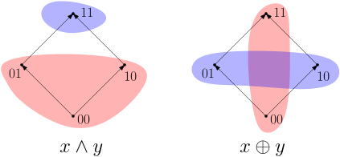
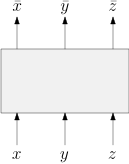
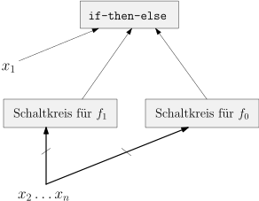
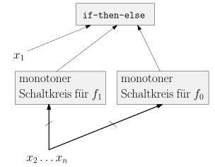
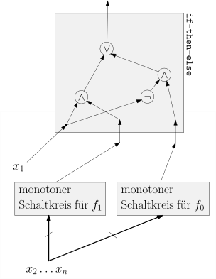
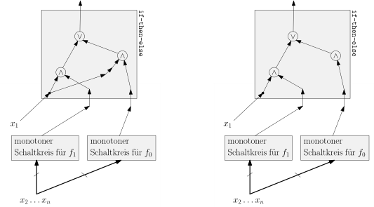
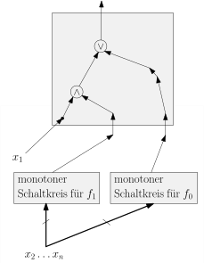
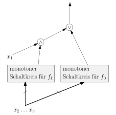

2.4 Monotone Funktionen und monotone Schaltkreise./course1/wly/02/04-monotone-circuits.wly:3:11
2.4 Monotone Funktionen und monotone Schaltkreise./course1/wly/02/04-monotone-circuits.wly:3:11
Für zwei Tupel ./course1/wly/02/04-monotone-circuits.wly:5:5$\mathbf{x}, \mathbf{y} \in \{0,1\}^n$./course1/wly/02/04-monotone-circuits.wly:5:20 ./course1/wly/02/04-monotone-circuits.wly:5:58 schreiben wir ./course1/wly/02/04-monotone-circuits.wly:6:5$\mathbf{x} \leq \mathbf{y}$./course1/wly/02/04-monotone-circuits.wly:6:19,./course1/wly/02/04-monotone-circuits.wly:6:47 falls./course1/wly/02/04-monotone-circuits.wly:6:47 ./course1/wly/02/04-monotone-circuits.wly:7:5$x_1 \leq y_1, \dots, x_n \leq y_n$./course1/wly/02/04-monotone-circuits.wly:7:5,./course1/wly/02/04-monotone-circuits.wly:7:40 also ./course1/wly/02/04-monotone-circuits.wly:7:40$\mathbf{x}$./course1/wly/02/04-monotone-circuits.wly:7:47 ./course1/wly/02/04-monotone-circuits.wly:7:59in./course1/wly/02/04-monotone-circuits.wly:7:61 jeder Koordinate./course1/wly/02/04-monotone-circuits.wly:8:5 kleiner gleich ./course1/wly/02/04-monotone-circuits.wly:8:22$\mathbf{y}$./course1/wly/02/04-monotone-circuits.wly:8:38 ist../course1/wly/02/04-monotone-circuits.wly:8:50 Beispielsweise gilt ./course1/wly/02/04-monotone-circuits.wly:9:5$(0,0,1) \leq (1,0,1)$./course1/wly/02/04-monotone-circuits.wly:9:25../course1/wly/02/04-monotone-circuits.wly:9:47 Allerdings./course1/wly/02/04-monotone-circuits.wly:9:47 gilt weder ./course1/wly/02/04-monotone-circuits.wly:10:5$(0,1,0) \leq (1,0,1)$./course1/wly/02/04-monotone-circuits.wly:10:16 noch umgekehrt; die./course1/wly/02/04-monotone-circuits.wly:10:38 beiden Tupel sind ./course1/wly/02/04-monotone-circuits.wly:11:5unvergleichbar./course1/wly/02/04-monotone-circuits.wly:11:24;./course1/wly/02/04-monotone-circuits.wly:11:39 es handelt sich bei./course1/wly/02/04-monotone-circuits.wly:11:39 ./course1/wly/02/04-monotone-circuits.wly:12:5$\leq$./course1/wly/02/04-monotone-circuits.wly:12:5 also um eine ./course1/wly/02/04-monotone-circuits.wly:12:11Partialordnung./course1/wly/02/04-monotone-circuits.wly:12:26../course1/wly/02/04-monotone-circuits.wly:12:41 Am Besten stellen./course1/wly/02/04-monotone-circuits.wly:12:41 Sie sich eine solche Partialordnung als gerichteten Graphen./course1/wly/02/04-monotone-circuits.wly:13:5 vor:./course1/wly/02/04-monotone-circuits.wly:14:5
Diese Darstellung einer Partialordnung als gerichteter./course1/wly/02/04-monotone-circuits.wly:21:5 Graph bezeichnet man auch als ./course1/wly/02/04-monotone-circuits.wly:22:5Hasse-Diagramm./course1/wly/02/04-monotone-circuits.wly:22:36 (ich./course1/wly/02/04-monotone-circuits.wly:22:51 verzichte hier auf eine formale Definition). Es gilt nun./course1/wly/02/04-monotone-circuits.wly:23:5 ./course1/wly/02/04-monotone-circuits.wly:24:5$\mathbf{x} \leq \mathbf{y}$./course1/wly/02/04-monotone-circuits.wly:24:5,./course1/wly/02/04-monotone-circuits.wly:24:33 wenn Sie im Hasse-Diagramm./course1/wly/02/04-monotone-circuits.wly:24:33 einen Pfad von ./course1/wly/02/04-monotone-circuits.wly:25:5$\mathbf{x}$./course1/wly/02/04-monotone-circuits.wly:25:20 nach ./course1/wly/02/04-monotone-circuits.wly:25:32$\mathbf{y}$./course1/wly/02/04-monotone-circuits.wly:25:38 finden../course1/wly/02/04-monotone-circuits.wly:25:50 ./course1/wly/02/04-monotone-circuits.wly:26:5Vorsicht../course1/wly/02/04-monotone-circuits.wly:26:6 Im obigen Bild steht zwar ./course1/wly/02/04-monotone-circuits.wly:26:16$001$./course1/wly/02/04-monotone-circuits.wly:26:43 unterhalb von./course1/wly/02/04-monotone-circuits.wly:26:48 ./course1/wly/02/04-monotone-circuits.wly:27:5$110$./course1/wly/02/04-monotone-circuits.wly:27:5,./course1/wly/02/04-monotone-circuits.wly:27:10 allerdings werden Sie keinen Pfad von ./course1/wly/02/04-monotone-circuits.wly:27:10$001$./course1/wly/02/04-monotone-circuits.wly:27:50 nach./course1/wly/02/04-monotone-circuits.wly:27:55 ./course1/wly/02/04-monotone-circuits.wly:28:5$110$./course1/wly/02/04-monotone-circuits.wly:28:5 finden; es gilt also ./course1/wly/02/04-monotone-circuits.wly:28:10$001 \not \leq 110$./course1/wly/02/04-monotone-circuits.wly:28:32;./course1/wly/02/04-monotone-circuits.wly:28:51 die beiden./course1/wly/02/04-monotone-circuits.wly:28:51 Elemente sind ./course1/wly/02/04-monotone-circuits.wly:29:5unvergleichbar./course1/wly/02/04-monotone-circuits.wly:29:20../course1/wly/02/04-monotone-circuits.wly:29:35
Definition 2.4.1./course1/wly/02/04-monotone-circuits.wly:31:5 ./course1/wly/02/04-monotone-circuits.wly:31:5 Eine Boolesche Funktion ./course1/wly/02/04-monotone-circuits.wly:32:9$f: \{0,1\}^n \rightarrow \{0,1\}$./course1/wly/02/04-monotone-circuits.wly:32:33 ./course1/wly/02/04-monotone-circuits.wly:32:67 heißt ./course1/wly/02/04-monotone-circuits.wly:33:9monoton./course1/wly/02/04-monotone-circuits.wly:33:16,./course1/wly/02/04-monotone-circuits.wly:33:24 wenn./course1/wly/02/04-monotone-circuits.wly:33:24
In anderen Worten: wenn wir ein Input-Bit von 0 auf 1./course1/wly/02/04-monotone-circuits.wly:40:9 ändern, kann das Output-Bit nicht von 1 auf 0 umkippen../course1/wly/02/04-monotone-circuits.wly:41:9
Übungsaufgabe 2.4.1./course1/wly/02/04-monotone-circuits.wly:43:5 ./course1/wly/02/04-monotone-circuits.wly:43:5 Welche der Booleschen Funktionen./course1/wly/02/04-monotone-circuits.wly:44:9 ./course1/wly/02/04-monotone-circuits.wly:45:9$\wedge, \vee, \neg, \oplus, \maj$./course1/wly/02/04-monotone-circuits.wly:45:9 sind monoton?./course1/wly/02/04-monotone-circuits.wly:45:43
Funktionen auf wenigen Variablen können wir graphisch./course1/wly/02/04-monotone-circuits.wly:47:5 darstellen und somit erkennen, ob sie monoton sind oder./course1/wly/02/04-monotone-circuits.wly:48:5 nicht. Für eine Funktion ./course1/wly/02/04-monotone-circuits.wly:49:5$f: \{0,1\}^2 \rightarrow \{0,1\}$./course1/wly/02/04-monotone-circuits.wly:49:30 ./course1/wly/02/04-monotone-circuits.wly:49:64 markieren wir im Hasse-Diagramm von ./course1/wly/02/04-monotone-circuits.wly:50:5$\{0,1\}^2$./course1/wly/02/04-monotone-circuits.wly:50:41 diejenigen./course1/wly/02/04-monotone-circuits.wly:50:52 Elemente blau, auf denen ./course1/wly/02/04-monotone-circuits.wly:51:5$f(x,y) = 1$./course1/wly/02/04-monotone-circuits.wly:51:30 ist, und die anderen./course1/wly/02/04-monotone-circuits.wly:51:42 rot../course1/wly/02/04-monotone-circuits.wly:52:5

course1/public/img/circuits/hasse-clouds.svgWir sehen nun, dass es im Bild von ./course1/wly/02/04-monotone-circuits.wly:59:5$\wedge$./course1/wly/02/04-monotone-circuits.wly:59:40 keinen roten./course1/wly/02/04-monotone-circuits.wly:59:48 Punkt gibt, der oberhalb eines blauen Punktes liegt, im./course1/wly/02/04-monotone-circuits.wly:60:5 Bild von ./course1/wly/02/04-monotone-circuits.wly:61:5$\oplus$./course1/wly/02/04-monotone-circuits.wly:61:14 allerdings schon. Der Grund: ./course1/wly/02/04-monotone-circuits.wly:61:22$\wedge$./course1/wly/02/04-monotone-circuits.wly:61:52 ./course1/wly/02/04-monotone-circuits.wly:61:60 ist monoton, ./course1/wly/02/04-monotone-circuits.wly:62:5$\xor$./course1/wly/02/04-monotone-circuits.wly:62:18 ist es nicht. Formaler argumentiert:./course1/wly/02/04-monotone-circuits.wly:62:24 in der Partialordnung gilt ./course1/wly/02/04-monotone-circuits.wly:63:5$01 \leq 11$./course1/wly/02/04-monotone-circuits.wly:63:32 aber./course1/wly/02/04-monotone-circuits.wly:63:44 ./course1/wly/02/04-monotone-circuits.wly:64:5$\xor (0,1) \gt \xor (1,0)$./course1/wly/02/04-monotone-circuits.wly:64:5,./course1/wly/02/04-monotone-circuits.wly:64:32 was der Definition einer./course1/wly/02/04-monotone-circuits.wly:64:32 monotonen Funktion widerspricht. (Ich habe hier absichtlich./course1/wly/02/04-monotone-circuits.wly:65:5 die Präfixschreibweise ./course1/wly/02/04-monotone-circuits.wly:66:5$\xor(0,1)$./course1/wly/02/04-monotone-circuits.wly:66:28 verwendet, um./course1/wly/02/04-monotone-circuits.wly:66:39 hervorzuheben, dass es sich hierbei um eine Funktion in./course1/wly/02/04-monotone-circuits.wly:67:5 zwei Variablen handelt.) Beachten Sie, dass ich die Worte./course1/wly/02/04-monotone-circuits.wly:68:5 ./course1/wly/02/04-monotone-circuits.wly:69:5"oberhalb"./course1/wly/02/04-monotone-circuits.wly:69:6 im Sinne der Partialordnung meine, nicht./course1/wly/02/04-monotone-circuits.wly:69:17 wirklich im geometrischen Sinne in der Abbildung. Von den./course1/wly/02/04-monotone-circuits.wly:70:5 Basis-Gates ./course1/wly/02/04-monotone-circuits.wly:71:5$\wedge, \vee, \neg$./course1/wly/02/04-monotone-circuits.wly:71:17 sind ./course1/wly/02/04-monotone-circuits.wly:71:37$\wedge$./course1/wly/02/04-monotone-circuits.wly:71:43 und ./course1/wly/02/04-monotone-circuits.wly:71:51$\vee$./course1/wly/02/04-monotone-circuits.wly:71:56 ./course1/wly/02/04-monotone-circuits.wly:71:62 monoton, ./course1/wly/02/04-monotone-circuits.wly:72:5$\neg$./course1/wly/02/04-monotone-circuits.wly:72:14 ist es nicht. Es sollte also klar sein,./course1/wly/02/04-monotone-circuits.wly:72:20 dass ein Schaltkreis ohne Negation immer eine monotone./course1/wly/02/04-monotone-circuits.wly:73:5 Funktion berechnet. Allerdings stimmt der Umkehrschluss./course1/wly/02/04-monotone-circuits.wly:74:5 nicht. Der Schaltkreis./course1/wly/02/04-monotone-circuits.wly:75:5
ist nicht monoton (beachten Sie hinter der ./course1/wly/02/04-monotone-circuits.wly:82:5$\bar{y}$./course1/wly/02/04-monotone-circuits.wly:82:48 ./course1/wly/02/04-monotone-circuits.wly:82:57 -Schreibweise versteckte NOT-Gate), ist aber äquivalent zu./course1/wly/02/04-monotone-circuits.wly:83:5 der offensichtlich monotonen Funktion ./course1/wly/02/04-monotone-circuits.wly:84:5$x$./course1/wly/02/04-monotone-circuits.wly:84:43../course1/wly/02/04-monotone-circuits.wly:84:46 Allerdings./course1/wly/02/04-monotone-circuits.wly:84:46 können wir folgendes beweisen:./course1/wly/02/04-monotone-circuits.wly:85:5
Theorem 2.4.2./course1/wly/02/04-monotone-circuits.wly:87:5 ./course1/wly/02/04-monotone-circuits.wly:87:5 Zu jeder monotonen Funktion./course1/wly/02/04-monotone-circuits.wly:89:9 ./course1/wly/02/04-monotone-circuits.wly:90:9$f: \{0,1\}^n \rightarrow \{0,1\}$./course1/wly/02/04-monotone-circuits.wly:90:9 gibt es einen monotonen./course1/wly/02/04-monotone-circuits.wly:90:43 Schaltkreis (also ohne NOT-Gates), der ./course1/wly/02/04-monotone-circuits.wly:91:9$f$./course1/wly/02/04-monotone-circuits.wly:91:48 berechnet../course1/wly/02/04-monotone-circuits.wly:91:51
Übungsaufgabe 2.4.2./course1/wly/02/04-monotone-circuits.wly:93:5 ./course1/wly/02/04-monotone-circuits.wly:93:5 Beweisen Sie das Theorem. ./course1/wly/02/04-monotone-circuits.wly:94:9Tip../course1/wly/02/04-monotone-circuits.wly:94:36 Gehen Sie meine oben./course1/wly/02/04-monotone-circuits.wly:94:41 skizzierten drei Konstruktionen durch (Rekursiv, DNF, CNF)./course1/wly/02/04-monotone-circuits.wly:95:9 und versuchen Sie, sie so zu modifizieren, dass Sie alle./course1/wly/02/04-monotone-circuits.wly:96:9 NOT-Gates loswerden../course1/wly/02/04-monotone-circuits.wly:97:9
Übungsaufgabe 2.4.3./course1/wly/02/04-monotone-circuits.wly:99:5 ./course1/wly/02/04-monotone-circuits.wly:99:5 Finden Sie alle monotonen Funktionen in zwei Variablen../course1/wly/02/04-monotone-circuits.wly:100:9 Wie sieht es mit allen monotonen Funktionen in ./course1/wly/02/04-monotone-circuits.wly:101:9drei./course1/wly/02/04-monotone-circuits.wly:101:57 ./course1/wly/02/04-monotone-circuits.wly:101:62 Variablen aus? Am Besten betrachten Sie das./course1/wly/02/04-monotone-circuits.wly:102:9 ./course1/wly/02/04-monotone-circuits.wly:103:9Hasse-Diagramm./course1/wly/02/04-monotone-circuits.wly:103:10 der Partialordnungen auf Mengen./course1/wly/02/04-monotone-circuits.wly:103:25 ./course1/wly/02/04-monotone-circuits.wly:104:9$\{0,1\}^2$./course1/wly/02/04-monotone-circuits.wly:104:9 bzw. ./course1/wly/02/04-monotone-circuits.wly:104:20$\{0,1\}^3$./course1/wly/02/04-monotone-circuits.wly:104:26:./course1/wly/02/04-monotone-circuits.wly:104:37
und überlegen sich, wie Sie die vier bzw. acht Knoten auf./course1/wly/02/04-monotone-circuits.wly:111:9 monotone Weise in einen 1-Bereich und einen 0-Bereich./course1/wly/02/04-monotone-circuits.wly:112:9 aufteilen können../course1/wly/02/04-monotone-circuits.wly:113:9
Übungsaufgabe 2.4.4 (Challenge)../course1/wly/02/04-monotone-circuits.wly:115:5 Bauen Sie einen Schaltkreis mit drei./course1/wly/02/04-monotone-circuits.wly:116:23 Input-Variablen ./course1/wly/02/04-monotone-circuits.wly:117:9$x,y,z$./course1/wly/02/04-monotone-circuits.wly:117:25,./course1/wly/02/04-monotone-circuits.wly:117:32 der drei Output-Gates hat, die./course1/wly/02/04-monotone-circuits.wly:117:32 ./course1/wly/02/04-monotone-circuits.wly:118:9$\bar{x}, \bar{y}, \bar{z}$./course1/wly/02/04-monotone-circuits.wly:118:9 berechnen. Ihr Schaltkreis./course1/wly/02/04-monotone-circuits.wly:118:36 darf ./course1/wly/02/04-monotone-circuits.wly:119:9höchstens zwei NOT-Gates./course1/wly/02/04-monotone-circuits.wly:119:15 einhalten, aber beliebig./course1/wly/02/04-monotone-circuits.wly:119:40 viele AND- und OR-Gates../course1/wly/02/04-monotone-circuits.wly:120:9

course1/public/img/circuits/triple-negator.svgIch lege Ihnen sehr ans Herz, die obigen Übungsaufgaben./course1/wly/02/04-monotone-circuits.wly:130:5 selbständig zu bearbeiten. Falls Sie dennoch die Geduld./course1/wly/02/04-monotone-circuits.wly:131:5 verlieren, so habe ich hier Lösungen ausgearbeitet. Auch./course1/wly/02/04-monotone-circuits.wly:132:5 mit dem Zweck, an dieser Stelle auf Beweismethoden wie./course1/wly/02/04-monotone-circuits.wly:133:5 ./course1/wly/02/04-monotone-circuits.wly:134:5Induktion./course1/wly/02/04-monotone-circuits.wly:134:6 und verschiedene Beweisstrategien einzugehen../course1/wly/02/04-monotone-circuits.wly:134:16
Theorem 2.4.3./course1/wly/02/04-monotone-circuits.wly:136:5 ./course1/wly/02/04-monotone-circuits.wly:136:5 Zu jeder monotonen Funktion./course1/wly/02/04-monotone-circuits.wly:137:9 ./course1/wly/02/04-monotone-circuits.wly:138:9$f: \{0,1\}^n \rightarrow \{0,1\}$./course1/wly/02/04-monotone-circuits.wly:138:9 gibt es einen monotonen./course1/wly/02/04-monotone-circuits.wly:138:43 Schaltkreis (also ohne NOT-Gates), der ./course1/wly/02/04-monotone-circuits.wly:139:9$f$./course1/wly/02/04-monotone-circuits.wly:139:48 berechnet../course1/wly/02/04-monotone-circuits.wly:139:51
Ich werde zweieinhalb Beweise für dieses Theorem./course1/wly/02/04-monotone-circuits.wly:141:5 vorstellen. Dies dient auch dazu, gängige ./course1/wly/02/04-monotone-circuits.wly:142:5Beweistechniken./course1/wly/02/04-monotone-circuits.wly:142:48 ./course1/wly/02/04-monotone-circuits.wly:142:64 und ./course1/wly/02/04-monotone-circuits.wly:143:5Beweismethoden./course1/wly/02/04-monotone-circuits.wly:143:10 zu illustrieren. Unter Beweismethoden./course1/wly/02/04-monotone-circuits.wly:143:25 verstehe ich hier formale Methoden wie./course1/wly/02/04-monotone-circuits.wly:144:5
Beweis durch Induktion,./course1/wly/02/04-monotone-circuits.wly:148:13
Beweis durch Widerspruch,./course1/wly/02/04-monotone-circuits.wly:151:13
Beweis durch vollständige Fallunterscheidung,./course1/wly/02/04-monotone-circuits.wly:154:13
..../course1/wly/02/04-monotone-circuits.wly:157:13
wie sie zum Beispiel auf./course1/wly/02/04-monotone-circuits.wly:159:5 ./course1/wly/02/04-monotone-circuits.wly:160:5Wikipedia./course1/wly/02/04-monotone-circuits.wly:160:6 ./course1/wly/02/04-monotone-circuits.wly:160:82 aufgeführt sind. Diesen zur Seite stehen die nicht wirklich./course1/wly/02/04-monotone-circuits.wly:161:5 formalisierbaren Beweistechniken oder Beweisstrategien, die./course1/wly/02/04-monotone-circuits.wly:162:5 sich oft aus persönlicher Erfahrung speisen, wie zum./course1/wly/02/04-monotone-circuits.wly:163:5 Beispiel./course1/wly/02/04-monotone-circuits.wly:164:5
kleine Beispiele untersuchen und dann verallgemeinern,./course1/wly/02/04-monotone-circuits.wly:168:13
bereits Bekanntes abwandeln und hoffen, dass es./course1/wly/02/04-monotone-circuits.wly:171:13 funktioniert,./course1/wly/02/04-monotone-circuits.wly:172:13
local change: ein Objekt schrittweise in die gewünschte./course1/wly/02/04-monotone-circuits.wly:175:13 Richtung verändern;./course1/wly/02/04-monotone-circuits.wly:176:13
da bei den Beweistechniken Erfahrung, Intuition und./course1/wly/02/04-monotone-circuits.wly:178:5 Kreativität mit ins Spiel kommen, ist es unmöglich, eine./course1/wly/02/04-monotone-circuits.wly:179:5 vollständige Liste anzugeben; ich habe die drei obigen./course1/wly/02/04-monotone-circuits.wly:180:5 Punkte gewählt, weil sie in der Tat das repräsentieren, was./course1/wly/02/04-monotone-circuits.wly:181:5 wir in den Beweisen jetzt verwenden werden../course1/wly/02/04-monotone-circuits.wly:182:5
Erster Beweis. Top-Down mit
./course1/wly/02/04-monotone-circuits.wly:185:10if-then-else./course1/wly/02/04-monotone-circuits.wly:185:39../course1/wly/02/04-monotone-circuits.wly:185:52
In diesem./course1/wly/02/04-monotone-circuits.wly:185:54
Beweis verwende ich die zweite oben erwähnte Technik:./course1/wly/02/04-monotone-circuits.wly:186:9
bereits bekanntes abwandeln. Was kennen wir denn bereits?./course1/wly/02/04-monotone-circuits.wly:187:9
Wir kennen die./course1/wly/02/04-monotone-circuits.wly:188:9
./course1/wly/02/04-monotone-circuits.wly:189:9Top-Down-Methode./course1/wly/02/04-monotone-circuits.wly:189:10, wie./course1/wly/02/04-monotone-circuits.wly:189:60
wir aus einer Wahrheitstabelle einen Schaltkreis bauen:./course1/wly/02/04-monotone-circuits.wly:190:9
Theorem 2.4.4./course1/wly/02/04-monotone-circuits.wly:192:9 ./course1/wly/02/04-monotone-circuits.wly:192:9 Zu jeder Booleschen Funktion./course1/wly/02/04-monotone-circuits.wly:194:13 ./course1/wly/02/04-monotone-circuits.wly:195:13$f: \{0,1\}^n \rightarrow \{0,1\}$./course1/wly/02/04-monotone-circuits.wly:195:13 gibt es einen./course1/wly/02/04-monotone-circuits.wly:195:47 Schaltkreis ./course1/wly/02/04-monotone-circuits.wly:196:13$C$./course1/wly/02/04-monotone-circuits.wly:196:25,./course1/wly/02/04-monotone-circuits.wly:196:28 der ./course1/wly/02/04-monotone-circuits.wly:196:28$f$./course1/wly/02/04-monotone-circuits.wly:196:34 berechnet../course1/wly/02/04-monotone-circuits.wly:196:37
Wir haben diese Konstruktion in der Vorlesung an einem./course1/wly/02/04-monotone-circuits.wly:198:9 Beispiel durchexerziert und auch Größe und Tiefe des./course1/wly/02/04-monotone-circuits.wly:199:9 resultierenden Schaltkreises analysiert, allerdings haben./course1/wly/02/04-monotone-circuits.wly:200:9 wir den Beweis nicht formal aufgeschrieben. Nutzen wir hier./course1/wly/02/04-monotone-circuits.wly:201:9 die Gelegennheit und üben an diesem Beispiel das Finden und./course1/wly/02/04-monotone-circuits.wly:202:9 Führen mathematischer Beweise. Beachten Sie, dass wir nun./course1/wly/02/04-monotone-circuits.wly:203:9 vorerst über allgemeine, nicht notwendigerweise monotone./course1/wly/02/04-monotone-circuits.wly:204:9 Boolesche Funktionen reden. Falls Sie sich noch gut an./course1/wly/02/04-monotone-circuits.wly:205:9 unseren Beweis von Theorem 2 in der Vorlesung erinnern./course1/wly/02/04-monotone-circuits.wly:206:9 können und eher an Theorem 1 als an allgemeinen./course1/wly/02/04-monotone-circuits.wly:207:9 Beweismethoden interessiert sind, dürfen Sie gerne./course1/wly/02/04-monotone-circuits.wly:208:9 ./course1/wly/02/04-monotone-circuits.wly:209:9runterspringen./course1/wly/02/04-monotone-circuits.wly:209:10../course1/wly/02/04-monotone-circuits.wly:209:44
Beweis Als ./course1/wly/02/04-monotone-circuits.wly:212:13Beweismethode./course1/wly/02/04-monotone-circuits.wly:212:18 verwenden wir Induktion über ./course1/wly/02/04-monotone-circuits.wly:212:32$n$./course1/wly/02/04-monotone-circuits.wly:212:62,./course1/wly/02/04-monotone-circuits.wly:212:65 die./course1/wly/02/04-monotone-circuits.wly:212:65 Anzahl der Variablen../course1/wly/02/04-monotone-circuits.wly:213:13
Zur Erinnerung: bei einem Beweis per Induktion wollen wir./course1/wly/02/04-monotone-circuits.wly:217:17 eine Aussage der Form ./course1/wly/02/04-monotone-circuits.wly:218:17Für alle natürlichen Zahlen./course1/wly/02/04-monotone-circuits.wly:218:40 ./course1/wly/02/04-monotone-circuits.wly:219:17$n \in \N$./course1/wly/02/04-monotone-circuits.wly:219:17 gilt ./course1/wly/02/04-monotone-circuits.wly:219:27$P(n)$./course1/wly/02/04-monotone-circuits.wly:219:33 beweisen, wobei ./course1/wly/02/04-monotone-circuits.wly:219:40$P(n)$./course1/wly/02/04-monotone-circuits.wly:219:57 wiederum./course1/wly/02/04-monotone-circuits.wly:219:63 eine Aussage ist, in der die Zahl ./course1/wly/02/04-monotone-circuits.wly:220:17$n$./course1/wly/02/04-monotone-circuits.wly:220:51 irgendwo vorkommt../course1/wly/02/04-monotone-circuits.wly:220:54 Bei einem Beweis durch Induktion zeigen wir nun,./course1/wly/02/04-monotone-circuits.wly:221:17
dass ./course1/wly/02/04-monotone-circuits.wly:225:25$P(0)$./course1/wly/02/04-monotone-circuits.wly:225:30 gilt ./course1/wly/02/04-monotone-circuits.wly:225:36(./course1/wly/02/04-monotone-circuits.wly:225:36Induktionsbasis./course1/wly/02/04-monotone-circuits.wly:225:44),./course1/wly/02/04-monotone-circuits.wly:225:60
dass, wenn ./course1/wly/02/04-monotone-circuits.wly:228:25$P(n)$./course1/wly/02/04-monotone-circuits.wly:228:36 für eine Zahl ./course1/wly/02/04-monotone-circuits.wly:228:42$n \in \N$./course1/wly/02/04-monotone-circuits.wly:228:57 gilt, dann./course1/wly/02/04-monotone-circuits.wly:228:67 sicherlich auch ./course1/wly/02/04-monotone-circuits.wly:229:25$P(n+1)$./course1/wly/02/04-monotone-circuits.wly:229:41 gilt ./course1/wly/02/04-monotone-circuits.wly:229:49(./course1/wly/02/04-monotone-circuits.wly:229:49Induktionsschritt./course1/wly/02/04-monotone-circuits.wly:229:57)../course1/wly/02/04-monotone-circuits.wly:229:75
Wenn wir beide Teile gezeigt haben, können wir uns nun./course1/wly/02/04-monotone-circuits.wly:231:17 "hochhangeln": ./course1/wly/02/04-monotone-circuits.wly:232:17$P(0)$./course1/wly/02/04-monotone-circuits.wly:232:32 gilt, weil wir in Punkt 1 gezeigt./course1/wly/02/04-monotone-circuits.wly:232:38 haben; mit Hilfe von Punkt 2 können wir nun argumentieren,./course1/wly/02/04-monotone-circuits.wly:233:17 dass aus ./course1/wly/02/04-monotone-circuits.wly:234:17$P(0)$./course1/wly/02/04-monotone-circuits.wly:234:26 die Aussage ./course1/wly/02/04-monotone-circuits.wly:234:32$P(1)$./course1/wly/02/04-monotone-circuits.wly:234:45 folgt; dass aus ./course1/wly/02/04-monotone-circuits.wly:234:51$P(1)$./course1/wly/02/04-monotone-circuits.wly:234:68 ./course1/wly/02/04-monotone-circuits.wly:234:74 die Aussage ./course1/wly/02/04-monotone-circuits.wly:235:17$P(2)$./course1/wly/02/04-monotone-circuits.wly:235:29 folgt; und so weiter. Da wir auf diese./course1/wly/02/04-monotone-circuits.wly:235:35 Weise jede natürliche Zahl irgendwann erreichen, können wir./course1/wly/02/04-monotone-circuits.wly:236:17 schlussfolgern, dass ./course1/wly/02/04-monotone-circuits.wly:237:17$P(n)$./course1/wly/02/04-monotone-circuits.wly:237:38 für jede Zahl ./course1/wly/02/04-monotone-circuits.wly:237:44$n \in \Z$./course1/wly/02/04-monotone-circuits.wly:237:59 gilt../course1/wly/02/04-monotone-circuits.wly:237:69
Als erstes müssen wir nun unsere Aussage, die wir beweisen./course1/wly/02/04-monotone-circuits.wly:239:13 wollen (also die im Theorem) so formulieren, dass sie die./course1/wly/02/04-monotone-circuits.wly:240:13 Form ./course1/wly/02/04-monotone-circuits.wly:241:13$P(n)$./course1/wly/02/04-monotone-circuits.wly:241:19 für alle ./course1/wly/02/04-monotone-circuits.wly:241:25$n \in \N$./course1/wly/02/04-monotone-circuits.wly:241:35 annimmt. Dies ist./course1/wly/02/04-monotone-circuits.wly:241:46 einfach, da die Zahl ./course1/wly/02/04-monotone-circuits.wly:242:13$n$./course1/wly/02/04-monotone-circuits.wly:242:34 bereits im Theorem vorkommt. Wir./course1/wly/02/04-monotone-circuits.wly:242:37 formulieren sie also nun so um:./course1/wly/02/04-monotone-circuits.wly:243:13
Theorem 2.4.5 (./course1/wly/02/04-monotone-circuits.wly:245:13Theorem 2.4.4, alternative Formulierung)./course1/wly/02/04-monotone-circuits.wly:245:13 ./course1/wly/02/04-monotone-circuits.wly:246:73 Für jede natürliche Zahl ./course1/wly/02/04-monotone-circuits.wly:247:17$n$./course1/wly/02/04-monotone-circuits.wly:247:42 gilt: zu jeder Booleschen./course1/wly/02/04-monotone-circuits.wly:247:45 Funktion ./course1/wly/02/04-monotone-circuits.wly:248:17$f: \{0,1\}^n \rightarrow \{0,1\}$./course1/wly/02/04-monotone-circuits.wly:248:26 gibt es einen./course1/wly/02/04-monotone-circuits.wly:248:60 Schaltkreis ./course1/wly/02/04-monotone-circuits.wly:249:17$C$./course1/wly/02/04-monotone-circuits.wly:249:29,./course1/wly/02/04-monotone-circuits.wly:249:32 der ./course1/wly/02/04-monotone-circuits.wly:249:32$f$./course1/wly/02/04-monotone-circuits.wly:249:38 berechnet../course1/wly/02/04-monotone-circuits.wly:249:41
Wir haben also im Prinzip Theorem 1.4.4 umständlicher./course1/wly/02/04-monotone-circuits.wly:251:13 formuliert, um die Abhängigkeit von ./course1/wly/02/04-monotone-circuits.wly:252:13$n$./course1/wly/02/04-monotone-circuits.wly:252:49 zu verdeutlichen../course1/wly/02/04-monotone-circuits.wly:252:52 Wir müssen nun Induktionsbasis und Induktionsschritt./course1/wly/02/04-monotone-circuits.wly:253:13 durchführen../course1/wly/02/04-monotone-circuits.wly:254:13
Induktionsbasis../course1/wly/02/04-monotone-circuits.wly:256:14 Wenn ./course1/wly/02/04-monotone-circuits.wly:256:31$n=0$./course1/wly/02/04-monotone-circuits.wly:256:37 ist, dann gibt es nur zwei./course1/wly/02/04-monotone-circuits.wly:256:42 mögliche Boolesche Funktionen, nämlich die konstanten./course1/wly/02/04-monotone-circuits.wly:257:13 Funktionen ./course1/wly/02/04-monotone-circuits.wly:258:13$0$./course1/wly/02/04-monotone-circuits.wly:258:24 und ./course1/wly/02/04-monotone-circuits.wly:258:27$1$./course1/wly/02/04-monotone-circuits.wly:258:32../course1/wly/02/04-monotone-circuits.wly:258:35 Für beide Funktionen gibt es einen./course1/wly/02/04-monotone-circuits.wly:258:35 Schaltkreis, nämlich bestehend aus einem Input-Gate (mit./course1/wly/02/04-monotone-circuits.wly:259:13 der Konstant 0 bzw. 1 beschriftet), das gleichzeitig auch./course1/wly/02/04-monotone-circuits.wly:260:13 Output-Gate ist../course1/wly/02/04-monotone-circuits.wly:261:13
⚠⚠ Vielleicht fühlen Sie sich unwohl bei der Idee, es mit./course1/wly/02/04-monotone-circuits.wly:265:17 Funktionen mit null Variablen tun zu haben. Allerdings:./course1/wly/02/04-monotone-circuits.wly:266:17 warum? In Java hätten Sie bestimmt kein Problem mit./course1/wly/02/04-monotone-circuits.wly:267:17
public boolean constantFalse() {./course1/wly/02/04-monotone-circuits.wly:270:17 return false;./course1/wly/02/04-monotone-circuits.wly:271:17 }./course1/wly/02/04-monotone-circuits.wly:272:17 public boolean constantTrue() {./course1/wly/02/04-monotone-circuits.wly:273:17 return true;./course1/wly/02/04-monotone-circuits.wly:274:17 }./course1/wly/02/04-monotone-circuits.wly:275:17
und dies sind ja offensichtlich Boolesche Funktionen mit./course1/wly/02/04-monotone-circuits.wly:278:17 null Input-Variablen. Ich nehme Ihre Ängste aber ernst, und./course1/wly/02/04-monotone-circuits.wly:279:17 in der Tat gibt es Fälle, wo es sich nicht richtig anfühlt,./course1/wly/02/04-monotone-circuits.wly:280:17 den Induktionsbeweis bei ./course1/wly/02/04-monotone-circuits.wly:281:17$0$./course1/wly/02/04-monotone-circuits.wly:281:42 anzufangen. In diesem Fall./course1/wly/02/04-monotone-circuits.wly:281:45 dürfen Sie die Induktionsbasis gerne bei ./course1/wly/02/04-monotone-circuits.wly:282:17$n=1$./course1/wly/02/04-monotone-circuits.wly:282:58 ansetzen./course1/wly/02/04-monotone-circuits.wly:282:63 oder wo auch immer Sie sich "wohlfühlen"; sie müssen dann./course1/wly/02/04-monotone-circuits.wly:283:17 aber im Hinterkopf behalten, dass Sie Ihre Aussage für./course1/wly/02/04-monotone-circuits.wly:284:17 ./course1/wly/02/04-monotone-circuits.wly:285:17$n=0$./course1/wly/02/04-monotone-circuits.wly:285:17 nicht bewiesen haben; machnmal ist das unvermeidbar,./course1/wly/02/04-monotone-circuits.wly:285:22 weil manche Aussagen einfach z.B. erst ab ./course1/wly/02/04-monotone-circuits.wly:286:17$n \geq 2$./course1/wly/02/04-monotone-circuits.wly:286:59 ./course1/wly/02/04-monotone-circuits.wly:286:69 gelten. Wenn wir die Induktionsbasis bei ./course1/wly/02/04-monotone-circuits.wly:287:17$n=1$./course1/wly/02/04-monotone-circuits.wly:287:58 ansetzen./course1/wly/02/04-monotone-circuits.wly:287:63 wollen, dann sehen wir, dass es ./course1/wly/02/04-monotone-circuits.wly:288:17vier./course1/wly/02/04-monotone-circuits.wly:288:50 Funktionen gibt:./course1/wly/02/04-monotone-circuits.wly:288:55 ./course1/wly/02/04-monotone-circuits.wly:289:17$0, 1, x, \neg x$./course1/wly/02/04-monotone-circuits.wly:289:17 ; all diese haben natürlich einen (sehr./course1/wly/02/04-monotone-circuits.wly:289:34 einfachen) Schaltkreis. Nur bei ./course1/wly/02/04-monotone-circuits.wly:290:17$\neg x$./course1/wly/02/04-monotone-circuits.wly:290:49 braucht unser./course1/wly/02/04-monotone-circuits.wly:290:57 Schaltkreis überhaupt ein Gate. An diesem Punkt./course1/wly/02/04-monotone-circuits.wly:291:17 protestieren Sie vielleicht und sagen, dass ./course1/wly/02/04-monotone-circuits.wly:292:17$0$./course1/wly/02/04-monotone-circuits.wly:292:61 keine./course1/wly/02/04-monotone-circuits.wly:292:64 Funktion in ./course1/wly/02/04-monotone-circuits.wly:293:17einer./course1/wly/02/04-monotone-circuits.wly:293:30 Variable ist, sondern in ./course1/wly/02/04-monotone-circuits.wly:293:36zwei./course1/wly/02/04-monotone-circuits.wly:293:63 ./course1/wly/02/04-monotone-circuits.wly:293:68 Variablen. Und auch hier appelliere ich an Ihre./course1/wly/02/04-monotone-circuits.wly:294:17 Programmiererfahrung: weder Sie noch der Java-Compiler./course1/wly/02/04-monotone-circuits.wly:295:17 werden Probleme mit der Funktion./course1/wly/02/04-monotone-circuits.wly:296:17
public boolean constantFalse(boolean x) {./course1/wly/02/04-monotone-circuits.wly:299:17 return false;./course1/wly/02/04-monotone-circuits.wly:300:17 }./course1/wly/02/04-monotone-circuits.wly:301:17
haben. Ja in der Tat, Java toleriert es, dass Sie./course1/wly/02/04-monotone-circuits.wly:304:17
./course1/wly/02/04-monotone-circuits.wly:305:17constantFalse./course1/wly/02/04-monotone-circuits.wly:305:18
zweimal deklariert haben, einmal als./course1/wly/02/04-monotone-circuits.wly:305:32
Funktion mit 0 Input-Variablen, einmal als Funktion mit./course1/wly/02/04-monotone-circuits.wly:306:17
einer Input-Variablen. Um hundertprozentig korrekt zu sein,./course1/wly/02/04-monotone-circuits.wly:307:17
müssten wir Funktionen
./course1/wly/02/04-monotone-circuits.wly:308:17$\textnormal{zero}_n$./course1/wly/02/04-monotone-circuits.wly:308:40
definieren./course1/wly/02/04-monotone-circuits.wly:308:61
als./course1/wly/02/04-monotone-circuits.wly:309:17
In der Praxis gehen wir in der Mathematik deutlich laxer./course1/wly/02/04-monotone-circuits.wly:316:17 mit Notation um und hoffen, dass der Leser aus dem Kontext./course1/wly/02/04-monotone-circuits.wly:317:17 die richtige Interpretation herausliest: ob ./course1/wly/02/04-monotone-circuits.wly:318:17$0$./course1/wly/02/04-monotone-circuits.wly:318:61 nun eine./course1/wly/02/04-monotone-circuits.wly:318:64 Konstante ist, eine Funktion mit einer Input-Variablen, mit./course1/wly/02/04-monotone-circuits.wly:319:17 zwei Input-Variablen etc. In mathematischen Papern lesen./course1/wly/02/04-monotone-circuits.wly:320:17 Sie in diesem Kontext manchmal ./course1/wly/02/04-monotone-circuits.wly:321:17with abuse of./course1/wly/02/04-monotone-circuits.wly:321:50 notation./course1/wly/02/04-monotone-circuits.wly:322:17,./course1/wly/02/04-monotone-circuits.wly:322:76 womit die Autoren andeuten, dass sie ihre Notation nicht./course1/wly/02/04-monotone-circuits.wly:323:17 ganz korrekt anwenden, aber davon ausgehen, dass Leser oder./course1/wly/02/04-monotone-circuits.wly:324:17 Leserin (die ja Menschen sind und keine Compiler),./course1/wly/02/04-monotone-circuits.wly:325:17 verstehen, was gemeint ist. ⚠⚠./course1/wly/02/04-monotone-circuits.wly:326:17
Wir haben nun also die Induktionsbasis erfolgreich./course1/wly/02/04-monotone-circuits.wly:328:13 gezeigt. Als nächstes kommt nun der Schritt. In diesem./course1/wly/02/04-monotone-circuits.wly:329:13 nehmen wir an, dass die Aussage ./course1/wly/02/04-monotone-circuits.wly:330:13$P(n)$./course1/wly/02/04-monotone-circuits.wly:330:45 bereits gilt, und./course1/wly/02/04-monotone-circuits.wly:330:51 wollen davon ausgehend zeigen, dass auch ./course1/wly/02/04-monotone-circuits.wly:331:13$P(n+1)$./course1/wly/02/04-monotone-circuits.wly:331:54 gilt../course1/wly/02/04-monotone-circuits.wly:331:62 Alternativ können wir annehmen, dass ./course1/wly/02/04-monotone-circuits.wly:332:13$P(n-1)$./course1/wly/02/04-monotone-circuits.wly:332:50 gilt und./course1/wly/02/04-monotone-circuits.wly:332:58 wollen ./course1/wly/02/04-monotone-circuits.wly:333:13$P(n)$./course1/wly/02/04-monotone-circuits.wly:333:20 zeigen (wobei wir nun ./course1/wly/02/04-monotone-circuits.wly:333:26$n \geq 1$./course1/wly/02/04-monotone-circuits.wly:333:49 annehmen./course1/wly/02/04-monotone-circuits.wly:333:59 müssen). Ob Sie ./course1/wly/02/04-monotone-circuits.wly:334:13$P(n) \Rightarrow P(n+1)$./course1/wly/02/04-monotone-circuits.wly:334:29 oder./course1/wly/02/04-monotone-circuits.wly:334:54 ./course1/wly/02/04-monotone-circuits.wly:335:13$P(n-1) \Rightarrow P(n)$./course1/wly/02/04-monotone-circuits.wly:335:13 zeigen, kommt aufs Gleiche raus./course1/wly/02/04-monotone-circuits.wly:335:38 und unterscheidet sich nur in der Notation; in diesem Falle./course1/wly/02/04-monotone-circuits.wly:336:13 ist es mir angenehmer, ./course1/wly/02/04-monotone-circuits.wly:337:13$P(n-1) \Rightarrow P(n)$./course1/wly/02/04-monotone-circuits.wly:337:36 zu./course1/wly/02/04-monotone-circuits.wly:337:61 zeigen. Wir dürfen also die ./course1/wly/02/04-monotone-circuits.wly:338:13Induktionshypothese./course1/wly/02/04-monotone-circuits.wly:338:42 ./course1/wly/02/04-monotone-circuits.wly:338:62$P(n-1)$./course1/wly/02/04-monotone-circuits.wly:338:63 ./course1/wly/02/04-monotone-circuits.wly:338:71 als gegeben annehmen:./course1/wly/02/04-monotone-circuits.wly:339:13
Induktionshypothese. Zu jeder Booleschen Funktion in ./course1/wly/02/04-monotone-circuits.wly:343:17$n-1$./course1/wly/02/04-monotone-circuits.wly:343:49 Variablen gibt es./course1/wly/02/04-monotone-circuits.wly:343:54 einen äquivalenten Schaltkreis../course1/wly/02/04-monotone-circuits.wly:344:17
und wollen den Induktionsschritt vollziehen, also ./course1/wly/02/04-monotone-circuits.wly:346:13$P(n)$./course1/wly/02/04-monotone-circuits.wly:346:63 ./course1/wly/02/04-monotone-circuits.wly:346:69 zeigen:./course1/wly/02/04-monotone-circuits.wly:347:13
Ziel des Induktionsschritts. Zu jeder Booleschen Funktion in ./course1/wly/02/04-monotone-circuits.wly:351:17$n$./course1/wly/02/04-monotone-circuits.wly:351:49 Variablen gibt es./course1/wly/02/04-monotone-circuits.wly:351:52 einen äquivalenten Schaltkreis../course1/wly/02/04-monotone-circuits.wly:352:17
Beweistechnik/-strategie./course1/wly/02/04-monotone-circuits.wly:354:14../course1/wly/02/04-monotone-circuits.wly:354:39 Um den Induktionsschritt./course1/wly/02/04-monotone-circuits.wly:354:39 vollziehen zu können, müssen wir irgendwie die ./course1/wly/02/04-monotone-circuits.wly:355:13$n$./course1/wly/02/04-monotone-circuits.wly:355:60 ./course1/wly/02/04-monotone-circuits.wly:355:63 -stellige Funktion ./course1/wly/02/04-monotone-circuits.wly:356:13$f$./course1/wly/02/04-monotone-circuits.wly:356:32 auf sinnvolle Weise in ./course1/wly/02/04-monotone-circuits.wly:356:35$n-1$./course1/wly/02/04-monotone-circuits.wly:356:59 ./course1/wly/02/04-monotone-circuits.wly:356:64 -stellige Funktionen "zerlegen". Hier ist im Allgemeinen./course1/wly/02/04-monotone-circuits.wly:357:13 Kreativität gefragt. Im vorliegenden Falle ist es aber./course1/wly/02/04-monotone-circuits.wly:358:13 recht klar, welche Zerlegung in Frage kommt. Wir definieren./course1/wly/02/04-monotone-circuits.wly:359:13 zwei neue, "kleinere" Funktionen./course1/wly/02/04-monotone-circuits.wly:360:13 ./course1/wly/02/04-monotone-circuits.wly:361:13$f_0, f_1: \{0,1\}^{n-1} \rightarrow \{0,1\}$./course1/wly/02/04-monotone-circuits.wly:361:13 per./course1/wly/02/04-monotone-circuits.wly:361:58
In anderen Worten, wir fixieren das erste Input-Bit auf./course1/wly/02/04-monotone-circuits.wly:368:13
einen konstanten Wert und erhalten so eine Funktion in./course1/wly/02/04-monotone-circuits.wly:369:13
./course1/wly/02/04-monotone-circuits.wly:370:13$n-1$./course1/wly/02/04-monotone-circuits.wly:370:13
Variablen. Die Funktion
./course1/wly/02/04-monotone-circuits.wly:370:18$f_0$./course1/wly/02/04-monotone-circuits.wly:370:43
ist im Prinzip die./course1/wly/02/04-monotone-circuits.wly:370:48
obere Hälfte der Wahrheitstabelle, und
./course1/wly/02/04-monotone-circuits.wly:371:13$f_1$./course1/wly/02/04-monotone-circuits.wly:371:52
ist die./course1/wly/02/04-monotone-circuits.wly:371:57
untere Hälfte. Da
./course1/wly/02/04-monotone-circuits.wly:372:13$f_0$./course1/wly/02/04-monotone-circuits.wly:372:31
und
./course1/wly/02/04-monotone-circuits.wly:372:36$f_1$./course1/wly/02/04-monotone-circuits.wly:372:41
jeweils nur
./course1/wly/02/04-monotone-circuits.wly:372:46$n-1$./course1/wly/02/04-monotone-circuits.wly:372:59
./course1/wly/02/04-monotone-circuits.wly:372:64
Input-Variablen haben, können wir die Induktionshypothese./course1/wly/02/04-monotone-circuits.wly:373:13
anwenden und folgern, dass es Boolesche Schaltkreise für./course1/wly/02/04-monotone-circuits.wly:374:13
sie gibt. Nach
./course1/wly/02/04-monotone-circuits.wly:375:13Zerlegen in
./course1/wly/02/04-monotone-circuits.wly:375:29$f_0, f_1$./course1/wly/02/04-monotone-circuits.wly:375:41
und
./course1/wly/02/04-monotone-circuits.wly:375:52Anwenden der./course1/wly/02/04-monotone-circuits.wly:375:58
Induktionshypothese./course1/wly/02/04-monotone-circuits.wly:376:13
müssen wir nun die Teilergebnisse./course1/wly/02/04-monotone-circuits.wly:376:33
wieder
./course1/wly/02/04-monotone-circuits.wly:377:13sinnvoll zusammenfügen./course1/wly/02/04-monotone-circuits.wly:377:21../course1/wly/02/04-monotone-circuits.wly:377:44
Dies tun wir in diesem./course1/wly/02/04-monotone-circuits.wly:377:44
Falle mit einem
./course1/wly/02/04-monotone-circuits.wly:378:13if-then-else./course1/wly/02/04-monotone-circuits.wly:378:30-Gate:./course1/wly/02/04-monotone-circuits.wly:378:43

course1/public/img/circuits/top-down-if-then-else.svgIch behaupte, dass obiger Schaltkreis tatsächlich ./course1/wly/02/04-monotone-circuits.wly:385:13$f$./course1/wly/02/04-monotone-circuits.wly:385:63 ./course1/wly/02/04-monotone-circuits.wly:385:66 berechnet. Falls dies noch nicht klar sein sollte, können./course1/wly/02/04-monotone-circuits.wly:386:13 wir auch dies formal beweisen, und zwar durch die Methode./course1/wly/02/04-monotone-circuits.wly:387:13 ./course1/wly/02/04-monotone-circuits.wly:388:13vollständige Fallunterscheidung../course1/wly/02/04-monotone-circuits.wly:388:14 Sei nun also ein./course1/wly/02/04-monotone-circuits.wly:388:47 konkreter Input ./course1/wly/02/04-monotone-circuits.wly:389:13$x_1,\dots,x_n$./course1/wly/02/04-monotone-circuits.wly:389:29 gegeben../course1/wly/02/04-monotone-circuits.wly:389:44
Der Fall ./course1/wly/02/04-monotone-circuits.wly:393:21$x_1 = 1$./course1/wly/02/04-monotone-circuits.wly:393:30../course1/wly/02/04-monotone-circuits.wly:393:39 Dann gibt der obige Schaltkreis den./course1/wly/02/04-monotone-circuits.wly:393:39 Wert ./course1/wly/02/04-monotone-circuits.wly:394:21$f_1(x_2,\dots,x_n$./course1/wly/02/04-monotone-circuits.wly:394:26 aus, was per Definition von ./course1/wly/02/04-monotone-circuits.wly:394:45$f_1$./course1/wly/02/04-monotone-circuits.wly:394:74 ./course1/wly/02/04-monotone-circuits.wly:394:79 gleich ./course1/wly/02/04-monotone-circuits.wly:395:21$f(1, x_2,\dots,x_n) = f(x_1,\dots,x_n)$./course1/wly/02/04-monotone-circuits.wly:395:28 ist. Er./course1/wly/02/04-monotone-circuits.wly:395:68 gibt also den korrekten Wert aus../course1/wly/02/04-monotone-circuits.wly:396:21
Der Fall ./course1/wly/02/04-monotone-circuits.wly:399:21$x_1 = 0$./course1/wly/02/04-monotone-circuits.wly:399:30../course1/wly/02/04-monotone-circuits.wly:399:39 Dann gibt der obige Schaltkreis den./course1/wly/02/04-monotone-circuits.wly:399:39 Wert ./course1/wly/02/04-monotone-circuits.wly:400:21$f_0(x_2,\dots,x_n$./course1/wly/02/04-monotone-circuits.wly:400:26 aus, was per Definition von ./course1/wly/02/04-monotone-circuits.wly:400:45$f_0$./course1/wly/02/04-monotone-circuits.wly:400:74 ./course1/wly/02/04-monotone-circuits.wly:400:79 gleich ./course1/wly/02/04-monotone-circuits.wly:401:21$f(0, x_2,\dots,x_n) = f(x_1,\dots,x_n)$./course1/wly/02/04-monotone-circuits.wly:401:28 ist. Er./course1/wly/02/04-monotone-circuits.wly:401:68 gibt also auch hier den korrekten Wert aus../course1/wly/02/04-monotone-circuits.wly:402:21
Wir haben also erfolgreich einen Schaltkreis für./course1/wly/02/04-monotone-circuits.wly:404:13 ./course1/wly/02/04-monotone-circuits.wly:405:13$f: \{0,1\}^n \rightarrow \{0,1\}$./course1/wly/02/04-monotone-circuits.wly:405:13 konstruiert. Unser./course1/wly/02/04-monotone-circuits.wly:405:47 Induktionsbeweis von Theorem 2 ist nun abgeschlossen../course1/wly/02/04-monotone-circuits.wly:406:13A\(\square\)
Diesen "hellblauen" Beweis haben wir ja bereits in der./course1/wly/02/04-monotone-circuits.wly:414:5 Vorlesung geführt. Ich habe ihn hier wiederholt und in./course1/wly/02/04-monotone-circuits.wly:415:5 größerem Detail besprochen, um auf verschiedene formale./course1/wly/02/04-monotone-circuits.wly:416:5 Aspekte der Beweisführung einzugehen. Wenden wir uns jetzt./course1/wly/02/04-monotone-circuits.wly:417:5 dem Beweis von ./course1/wly/02/04-monotone-circuits.wly:418:5Theorem 2.4.2 zu../course1/wly/02/04-monotone-circuits.wly:418:5
Theorem 2.4.2, nochmals. Zu jeder monotonen Funktion./course1/wly/02/04-monotone-circuits.wly:422:9 ./course1/wly/02/04-monotone-circuits.wly:423:9$f: \{0,1\}^n \rightarrow \{0,1\}$./course1/wly/02/04-monotone-circuits.wly:423:9 gibt es einen monotonen./course1/wly/02/04-monotone-circuits.wly:423:43 Schaltkreis (also ohne NOT-Gates), der ./course1/wly/02/04-monotone-circuits.wly:424:9$f$./course1/wly/02/04-monotone-circuits.wly:424:48 berechnet../course1/wly/02/04-monotone-circuits.wly:424:51
Erster Beweis. Top-Down mit
./course1/wly/02/04-monotone-circuits.wly:427:10if-then-else./course1/wly/02/04-monotone-circuits.wly:427:39../course1/wly/02/04-monotone-circuits.wly:427:52
Wir./course1/wly/02/04-monotone-circuits.wly:427:54
verfolgen die Beweistechnik "Bekanntes abwandeln und./course1/wly/02/04-monotone-circuits.wly:428:9
hoffen". Das Bekannte ist die Konstruktion im Beweis von./course1/wly/02/04-monotone-circuits.wly:429:9
Theorem 1, also die top-down-Konstruktion. Wir gehen wieder./course1/wly/02/04-monotone-circuits.wly:430:9
induktiv vor (allerdings bin ich jetzt weniger formal und./course1/wly/02/04-monotone-circuits.wly:431:9
weise Sie nicht mehr ständig auf die Bestandteile eines./course1/wly/02/04-monotone-circuits.wly:432:9
Induktionsbeweises hin) und zerlegen./course1/wly/02/04-monotone-circuits.wly:433:9
./course1/wly/02/04-monotone-circuits.wly:434:9$f: \{0,1\}^n \rightarrow \{0,1\}$./course1/wly/02/04-monotone-circuits.wly:434:9
in zwei neue,./course1/wly/02/04-monotone-circuits.wly:434:43
"kleinere" Funktionen./course1/wly/02/04-monotone-circuits.wly:435:9
./course1/wly/02/04-monotone-circuits.wly:436:9$f_0, f_1: \{0,1\}^{n-1} \rightarrow \{0,1\}$./course1/wly/02/04-monotone-circuits.wly:436:9
per./course1/wly/02/04-monotone-circuits.wly:436:54
Diese Funktionen sind selbst wiederum monoton (versuchen./course1/wly/02/04-monotone-circuits.wly:443:9
Sie, dies formal zu zeigen, wenn Sie Lust haben; oder./course1/wly/02/04-monotone-circuits.wly:444:9
versuchen Sie, es sich intuitiv klar zu machen). Per./course1/wly/02/04-monotone-circuits.wly:445:9
Induktionshypothese gibt es also monotone Schaltkreise für./course1/wly/02/04-monotone-circuits.wly:446:9
./course1/wly/02/04-monotone-circuits.wly:447:9$f_0$./course1/wly/02/04-monotone-circuits.wly:447:9
und
./course1/wly/02/04-monotone-circuits.wly:447:14$f_1$./course1/wly/02/04-monotone-circuits.wly:447:19../course1/wly/02/04-monotone-circuits.wly:447:24
Wir kombinieren diese mit einem./course1/wly/02/04-monotone-circuits.wly:447:24
./course1/wly/02/04-monotone-circuits.wly:448:9if-then-else./course1/wly/02/04-monotone-circuits.wly:448:10-Gate./course1/wly/02/04-monotone-circuits.wly:448:23
und erhalten:./course1/wly/02/04-monotone-circuits.wly:448:23

course1/public/img/circuits/top-down-if-then-else-2.svg
Die "durchgetrichenen" Kabel bedeuten, dass hier mehrere./course1/wly/02/04-monotone-circuits.wly:455:9
Kabel parallel laufen (also hier
./course1/wly/02/04-monotone-circuits.wly:456:9$n-1$./course1/wly/02/04-monotone-circuits.wly:456:42
viele). Erkennen./course1/wly/02/04-monotone-circuits.wly:456:47
Sie das Problem mit der Konstruktion? Klar: das./course1/wly/02/04-monotone-circuits.wly:457:9
./course1/wly/02/04-monotone-circuits.wly:458:9if-then-else./course1/wly/02/04-monotone-circuits.wly:458:10-Gate./course1/wly/02/04-monotone-circuits.wly:458:23
ist nicht monoton. Unser Schaltkreis./course1/wly/02/04-monotone-circuits.wly:458:23
schaut also in Wirklichkeit so aus:./course1/wly/02/04-monotone-circuits.wly:459:9

course1/public/img/circuits/top-down-if-then-else-3.svgund enthält ein NOT-Gate. Aber klar: wir können natürlich./course1/wly/02/04-monotone-circuits.wly:466:9 nicht die Konstruktion aus dem vorherigen Beweis./course1/wly/02/04-monotone-circuits.wly:467:9 wiederholen und hoffen, dass alles klappt. Die./course1/wly/02/04-monotone-circuits.wly:468:9 Beweistechnik heißt ja auch ./course1/wly/02/04-monotone-circuits.wly:469:9Bekanntes abwandeln./course1/wly/02/04-monotone-circuits.wly:469:38,./course1/wly/02/04-monotone-circuits.wly:469:58 nicht./course1/wly/02/04-monotone-circuits.wly:469:58 ./course1/wly/02/04-monotone-circuits.wly:470:9Bekanntes kritiklos wiederholen./course1/wly/02/04-monotone-circuits.wly:470:10../course1/wly/02/04-monotone-circuits.wly:470:42 Wie können wir den./course1/wly/02/04-monotone-circuits.wly:470:42 obigen Schaltkreis abwandeln, dass er monoton wird, also./course1/wly/02/04-monotone-circuits.wly:471:9 das eine NOT-Gate entfernen? Spontan fallen mir zwei Wege./course1/wly/02/04-monotone-circuits.wly:472:9 ein: wir können das NOT-Gate einfach durch ein gate-loses./course1/wly/02/04-monotone-circuits.wly:473:9 Kabel ersetzen oder das Kabel einfach ganz weglassen, also:./course1/wly/02/04-monotone-circuits.wly:474:9

course1/public/img/circuits/top-down-if-then-else-4.svgDer linke Schaltkreis gibt uns, als Formel geschrieben,./course1/wly/02/04-monotone-circuits.wly:481:9
Ich erlaube mir hier, aus Bequemlichkeit einfach ./course1/wly/02/04-monotone-circuits.wly:487:9$f_1$./course1/wly/02/04-monotone-circuits.wly:487:58 ./course1/wly/02/04-monotone-circuits.wly:487:63 statt ./course1/wly/02/04-monotone-circuits.wly:488:9$f_1(x_2,\dots,x_n)$./course1/wly/02/04-monotone-circuits.wly:488:15 zu schreiben. Auch ein ./course1/wly/02/04-monotone-circuits.wly:488:35abuse./course1/wly/02/04-monotone-circuits.wly:488:60 of notation./course1/wly/02/04-monotone-circuits.wly:489:9../course1/wly/02/04-monotone-circuits.wly:489:21 In der obigen Formel habe ich rechts das ./course1/wly/02/04-monotone-circuits.wly:489:21$x$./course1/wly/02/04-monotone-circuits.wly:489:64 ./course1/wly/02/04-monotone-circuits.wly:489:67 ausgeklammert; die Formel beginnt nun mit ./course1/wly/02/04-monotone-circuits.wly:490:9$x \wedge ...$./course1/wly/02/04-monotone-circuits.wly:490:51;./course1/wly/02/04-monotone-circuits.wly:490:65 ./course1/wly/02/04-monotone-circuits.wly:490:65 falls ./course1/wly/02/04-monotone-circuits.wly:491:9$x=0$./course1/wly/02/04-monotone-circuits.wly:491:15 ist, gibt sie also auf jeden Fall ./course1/wly/02/04-monotone-circuits.wly:491:20$0$./course1/wly/02/04-monotone-circuits.wly:491:55 aus; das./course1/wly/02/04-monotone-circuits.wly:491:58 kann im Allgemeinen nicht korrekt (also äquivalent zu ./course1/wly/02/04-monotone-circuits.wly:492:9$f$./course1/wly/02/04-monotone-circuits.wly:492:63 ./course1/wly/02/04-monotone-circuits.wly:492:66 sein; warum sollte ./course1/wly/02/04-monotone-circuits.wly:493:9$f$./course1/wly/02/04-monotone-circuits.wly:493:28 automatisch ./course1/wly/02/04-monotone-circuits.wly:493:31$0$./course1/wly/02/04-monotone-circuits.wly:493:44 sein, nur weil./course1/wly/02/04-monotone-circuits.wly:493:47 ./course1/wly/02/04-monotone-circuits.wly:494:9$x_1=0$./course1/wly/02/04-monotone-circuits.wly:494:9 ist? Wir schließen also: das NOT-Gate durch ein./course1/wly/02/04-monotone-circuits.wly:494:16 gate-loses Kabel zu ersetzen ist im Allgemeinen nicht./course1/wly/02/04-monotone-circuits.wly:495:9 korrekt. Schauen wir uns also den Schaltkreis im zweiten./course1/wly/02/04-monotone-circuits.wly:496:9 Bild an. Das rechte ./course1/wly/02/04-monotone-circuits.wly:497:9$\wedge$./course1/wly/02/04-monotone-circuits.wly:497:29-Gate./course1/wly/02/04-monotone-circuits.wly:497:37 hat nur einen Input,./course1/wly/02/04-monotone-circuits.wly:497:37 kann also weggelassen werden (d.h. durch ein Kabel ersetzt./course1/wly/02/04-monotone-circuits.wly:498:9 werden); wir erhalten den monotonen Schaltkreis./course1/wly/02/04-monotone-circuits.wly:499:9

course1/public/img/circuits/top-down-if-then-else-monotone.svgbzw. als Formel:./course1/wly/02/04-monotone-circuits.wly:506:9
Wir müssen nun zeigen, dass dies wirklich ./course1/wly/02/04-monotone-circuits.wly:512:9$f$./course1/wly/02/04-monotone-circuits.wly:512:51 berechnet,./course1/wly/02/04-monotone-circuits.wly:512:54 also./course1/wly/02/04-monotone-circuits.wly:513:9
Behauptung 2.4.6./course1/wly/02/04-monotone-circuits.wly:515:9 ./course1/wly/02/04-monotone-circuits.wly:515:9 Für alle ./course1/wly/02/04-monotone-circuits.wly:516:13$x_1,\dots,x_n$./course1/wly/02/04-monotone-circuits.wly:516:22 gilt./course1/wly/02/04-monotone-circuits.wly:516:37 ./course1/wly/02/04-monotone-circuits.wly:517:13$f(x_1,\dots,x_n) = (x_1 \wedge f_1(x_2,\dots,x_n)) \vee f_0(x_2,\dots,x_n) .$./course1/wly/02/04-monotone-circuits.wly:517:13
Beweis Wir machen eine Fallunterscheidung nach dem Wert von ./course1/wly/02/04-monotone-circuits.wly:521:13$x_1$./course1/wly/02/04-monotone-circuits.wly:521:66../course1/wly/02/04-monotone-circuits.wly:521:71
Der Fall ./course1/wly/02/04-monotone-circuits.wly:525:21$x_1 = 0$./course1/wly/02/04-monotone-circuits.wly:525:30../course1/wly/02/04-monotone-circuits.wly:525:39 Dann gilt./course1/wly/02/04-monotone-circuits.wly:525:39
und die behauptete Gleichung gilt../course1/wly/02/04-monotone-circuits.wly:534:21
Der Fall ./course1/wly/02/04-monotone-circuits.wly:537:21$x_1 = 1$./course1/wly/02/04-monotone-circuits.wly:537:30../course1/wly/02/04-monotone-circuits.wly:537:39 Dann gilt./course1/wly/02/04-monotone-circuits.wly:537:39
Was ist aber mit der rechten Seite der behaupteten./course1/wly/02/04-monotone-circuits.wly:543:21 Gleichung?./course1/wly/02/04-monotone-circuits.wly:544:21
Die linke Seite ist also ./course1/wly/02/04-monotone-circuits.wly:551:21$f_1$./course1/wly/02/04-monotone-circuits.wly:551:46,./course1/wly/02/04-monotone-circuits.wly:551:51 die rechte ist./course1/wly/02/04-monotone-circuits.wly:551:51 ./course1/wly/02/04-monotone-circuits.wly:552:21$f_1 \vee f_0$./course1/wly/02/04-monotone-circuits.wly:552:21../course1/wly/02/04-monotone-circuits.wly:552:35 Schaut leider nicht gleich aus. Jetzt./course1/wly/02/04-monotone-circuits.wly:552:35 sollten bei Ihnen die Glocken klingeln: wir haben bisher an./course1/wly/02/04-monotone-circuits.wly:553:21 keiner Stelle im Beweis verwendet, dass ./course1/wly/02/04-monotone-circuits.wly:554:21$f$./course1/wly/02/04-monotone-circuits.wly:554:61 eine monotone./course1/wly/02/04-monotone-circuits.wly:554:64 Funktion ist! Und wenn wir das nicht verwendet haben, kann./course1/wly/02/04-monotone-circuits.wly:555:21 der Beweis ja gar nicht funktionieren. Also: verwenden wir./course1/wly/02/04-monotone-circuits.wly:556:21 Monotonität:./course1/wly/02/04-monotone-circuits.wly:557:21
Wir überprüfen nun also: wenn ./course1/wly/02/04-monotone-circuits.wly:566:21$f_0(x_2, \dots, x_n) = 0$./course1/wly/02/04-monotone-circuits.wly:566:51 ./course1/wly/02/04-monotone-circuits.wly:566:77 ist, dann gilt ./course1/wly/02/04-monotone-circuits.wly:567:21$f_0 \vee f_1 = 0 \vee f_1 = f_1$./course1/wly/02/04-monotone-circuits.wly:567:36../course1/wly/02/04-monotone-circuits.wly:567:69 Wenn./course1/wly/02/04-monotone-circuits.wly:567:69 ./course1/wly/02/04-monotone-circuits.wly:568:21$f_0 = 1$./course1/wly/02/04-monotone-circuits.wly:568:21 ist, dann ist ./course1/wly/02/04-monotone-circuits.wly:568:30$f_1 = 1$./course1/wly/02/04-monotone-circuits.wly:568:45 wegen Monotonität./course1/wly/02/04-monotone-circuits.wly:568:54 (größer als 1 geht ja nicht), und daher./course1/wly/02/04-monotone-circuits.wly:569:21 ./course1/wly/02/04-monotone-circuits.wly:570:21$f_0 \vee f_1 = 1 \vee 1 = 1 = f_1$./course1/wly/02/04-monotone-circuits.wly:570:21../course1/wly/02/04-monotone-circuits.wly:570:56 In jedem Fall gilt./course1/wly/02/04-monotone-circuits.wly:570:56 also:./course1/wly/02/04-monotone-circuits.wly:571:21
Und somit sind linke und rechte Seite gleich, wie./course1/wly/02/04-monotone-circuits.wly:577:21 behauptet../course1/wly/02/04-monotone-circuits.wly:578:21
A\(\square\)
Wir haben nun also gezeigt, dass für jeden Input./course1/wly/02/04-monotone-circuits.wly:580:9 ./course1/wly/02/04-monotone-circuits.wly:581:9$x_1,\dots,x_n$./course1/wly/02/04-monotone-circuits.wly:581:9 gilt:./course1/wly/02/04-monotone-circuits.wly:581:24
(wobei wir aus Gründen der Lesbarkeit statt./course1/wly/02/04-monotone-circuits.wly:587:9 ./course1/wly/02/04-monotone-circuits.wly:588:9$f(x_1,\dots,x_n)$./course1/wly/02/04-monotone-circuits.wly:588:9 einfach ./course1/wly/02/04-monotone-circuits.wly:588:27$f$./course1/wly/02/04-monotone-circuits.wly:588:36 schreiben); per Induktion./course1/wly/02/04-monotone-circuits.wly:588:39 können wir für ./course1/wly/02/04-monotone-circuits.wly:589:9$f_1, f_0$./course1/wly/02/04-monotone-circuits.wly:589:24 monotone Schaltkreise finden,./course1/wly/02/04-monotone-circuits.wly:589:34 und somit ist./course1/wly/02/04-monotone-circuits.wly:590:9

course1/public/img/circuits/top-down-if-then-else-monotone-finished.svgein monotoner Schaltkreis für ./course1/wly/02/04-monotone-circuits.wly:597:9$f$./course1/wly/02/04-monotone-circuits.wly:597:39../course1/wly/02/04-monotone-circuits.wly:597:42
Zweiter Beweis. Bottom-Up, Konstruktion einer./course1/wly/02/04-monotone-circuits.wly:600:10 DNF-Formel../course1/wly/02/04-monotone-circuits.wly:601:9 Als Beweisstrategie verwende ich wieder./course1/wly/02/04-monotone-circuits.wly:601:21 ./course1/wly/02/04-monotone-circuits.wly:602:9Bekanntes abwandeln../course1/wly/02/04-monotone-circuits.wly:602:10
Das Bekannte../course1/wly/02/04-monotone-circuits.wly:604:10 Erinnern Sie sich an die Konstruktion./course1/wly/02/04-monotone-circuits.wly:604:24 einer DNF-Formel auf Basis der gegebenen Wahrheitstabelle../course1/wly/02/04-monotone-circuits.wly:605:9 Für jedes ./course1/wly/02/04-monotone-circuits.wly:606:9$n$./course1/wly/02/04-monotone-circuits.wly:606:19-Tupel./course1/wly/02/04-monotone-circuits.wly:606:22 ./course1/wly/02/04-monotone-circuits.wly:606:22 ./course1/wly/02/04-monotone-circuits.wly:607:9$\mathbf{a} := a_1,\dots,a_n) \in \{0,1\}^n$./course1/wly/02/04-monotone-circuits.wly:607:9,./course1/wly/02/04-monotone-circuits.wly:607:53 für welches./course1/wly/02/04-monotone-circuits.wly:607:53 ./course1/wly/02/04-monotone-circuits.wly:608:9$f$./course1/wly/02/04-monotone-circuits.wly:608:9 den Wert 1 ausgibt, konstruieren wir einen DNF-Term./course1/wly/02/04-monotone-circuits.wly:608:12 ./course1/wly/02/04-monotone-circuits.wly:609:9$T_{\mathbf{a}}$./course1/wly/02/04-monotone-circuits.wly:609:9,./course1/wly/02/04-monotone-circuits.wly:609:25 der auf ./course1/wly/02/04-monotone-circuits.wly:609:25$\mathbf{a}$./course1/wly/02/04-monotone-circuits.wly:609:35 eine 1 ausgibt und./course1/wly/02/04-monotone-circuits.wly:609:47 sonst überall eine 0. Um den Term genau zu beschreiben,./course1/wly/02/04-monotone-circuits.wly:610:9 definieren wir./course1/wly/02/04-monotone-circuits.wly:611:9
Als Beispiel: wenn ./course1/wly/02/04-monotone-circuits.wly:618:9$n=5$./course1/wly/02/04-monotone-circuits.wly:618:28 und ./course1/wly/02/04-monotone-circuits.wly:618:33$\mathbf{a} = (10010)$./course1/wly/02/04-monotone-circuits.wly:618:38,./course1/wly/02/04-monotone-circuits.wly:618:60 dann./course1/wly/02/04-monotone-circuits.wly:618:60 ist ./course1/wly/02/04-monotone-circuits.wly:619:9$I_{\mathbf{a}} = \{1,4\}$./course1/wly/02/04-monotone-circuits.wly:619:13 und./course1/wly/02/04-monotone-circuits.wly:619:39 ./course1/wly/02/04-monotone-circuits.wly:620:9$I_{\mathbf{a}} = \{2,3,5\}$./course1/wly/02/04-monotone-circuits.wly:620:9../course1/wly/02/04-monotone-circuits.wly:620:37 Wir definieren./course1/wly/02/04-monotone-circuits.wly:620:37
Für ./course1/wly/02/04-monotone-circuits.wly:627:9$\mathbf{a} = (10010)$./course1/wly/02/04-monotone-circuits.wly:627:13 gibt das also./course1/wly/02/04-monotone-circuits.wly:627:35 ./course1/wly/02/04-monotone-circuits.wly:628:9$x_1 \wedge x_4 \wedge \bar{x}_2 \wedge \bar{x}_3 \wedge \bar{x}_5$./course1/wly/02/04-monotone-circuits.wly:628:9../course1/wly/02/04-monotone-circuits.wly:629:19 ./course1/wly/02/04-monotone-circuits.wly:629:19 Noch kompakter kann man es hinschreiben, wenn man für eine./course1/wly/02/04-monotone-circuits.wly:630:9 Variable ./course1/wly/02/04-monotone-circuits.wly:631:9$x$./course1/wly/02/04-monotone-circuits.wly:631:18 und einen Wert ./course1/wly/02/04-monotone-circuits.wly:631:21$b \in \{0,1\}$./course1/wly/02/04-monotone-circuits.wly:631:37 folgendes./course1/wly/02/04-monotone-circuits.wly:631:52 definiert:./course1/wly/02/04-monotone-circuits.wly:632:9
Dann können wir ./course1/wly/02/04-monotone-circuits.wly:641:9$T_{\mathbf{a}}$./course1/wly/02/04-monotone-circuits.wly:641:25 einfach als./course1/wly/02/04-monotone-circuits.wly:641:41
definieren, für ./course1/wly/02/04-monotone-circuits.wly:647:9$\mathbf{a} = (10010)$./course1/wly/02/04-monotone-circuits.wly:647:25 also./course1/wly/02/04-monotone-circuits.wly:647:47 ./course1/wly/02/04-monotone-circuits.wly:648:9$x_1^1 \wedge x_2^0 \wedge x_3^0 \wedge x_4^1 \wedge x_5^0 = x_1 \wedge \bar{x}_2 \wedge \bar{x}_3 \wedge x_4 \wedge \bar{x}_5$./course1/wly/02/04-monotone-circuits.wly:648:9../course1/wly/02/04-monotone-circuits.wly:650:19 ./course1/wly/02/04-monotone-circuits.wly:650:19 Das gibt den gleichen Term wie zuvor, nur mit den Literalen./course1/wly/02/04-monotone-circuits.wly:651:9 in anderer Reihenfolge aufgelistet (was keine Rolle spielt,./course1/wly/02/04-monotone-circuits.wly:652:9 da ./course1/wly/02/04-monotone-circuits.wly:653:9$\wedge$./course1/wly/02/04-monotone-circuits.wly:653:12 kommutativ ist). Gegen eine Boolesche Funktion./course1/wly/02/04-monotone-circuits.wly:653:20 ./course1/wly/02/04-monotone-circuits.wly:654:9$f: \{0,1\}^n \rightarrow \{0,1\}$./course1/wly/02/04-monotone-circuits.wly:654:9,./course1/wly/02/04-monotone-circuits.wly:654:43 definieren wir./course1/wly/02/04-monotone-circuits.wly:654:43
Die Abkürzung ./course1/wly/02/04-monotone-circuits.wly:660:9$\sat$./course1/wly/02/04-monotone-circuits.wly:660:23 steht für ./course1/wly/02/04-monotone-circuits.wly:660:29satisfying assignments./course1/wly/02/04-monotone-circuits.wly:660:41,./course1/wly/02/04-monotone-circuits.wly:660:64 ./course1/wly/02/04-monotone-circuits.wly:660:64 also diejenigen Belegungen der Variablen, die ./course1/wly/02/04-monotone-circuits.wly:661:9$f$./course1/wly/02/04-monotone-circuits.wly:661:55 ./course1/wly/02/04-monotone-circuits.wly:661:58 "erfüllen", also 1 werden lassen. Wir bauen uns einen./course1/wly/02/04-monotone-circuits.wly:662:9 Schaltkreis ./course1/wly/02/04-monotone-circuits.wly:663:9$F$./course1/wly/02/04-monotone-circuits.wly:663:21:./course1/wly/02/04-monotone-circuits.wly:663:24
Dies ist eine DNF-Formel, also insbesondere ein./course1/wly/02/04-monotone-circuits.wly:669:9 Schaltkreis der Tiefe 2; wir sehen, dass ./course1/wly/02/04-monotone-circuits.wly:670:9$F \equiv f$./course1/wly/02/04-monotone-circuits.wly:670:50 ist,./course1/wly/02/04-monotone-circuits.wly:670:62 dieser Schaltkreis (diese Formel) also die Funktion ./course1/wly/02/04-monotone-circuits.wly:671:9$f$./course1/wly/02/04-monotone-circuits.wly:671:61 ./course1/wly/02/04-monotone-circuits.wly:671:64 berechnet. Dies ist genau die Konstruktion einer DNF, die./course1/wly/02/04-monotone-circuits.wly:672:9 wir in der Vorlesung bereits besprochen haben../course1/wly/02/04-monotone-circuits.wly:673:9
Das Bekannte abwandeln../course1/wly/02/04-monotone-circuits.wly:675:10 Der Ausdruck./course1/wly/02/04-monotone-circuits.wly:675:34 ./course1/wly/02/04-monotone-circuits.wly:676:9$\bigvee_{\mathbf{a} \in \sat(f)} T_{\mathbf{a}}$./course1/wly/02/04-monotone-circuits.wly:676:9 ist ja./course1/wly/02/04-monotone-circuits.wly:676:58 bereits ein Schaltkreis (der Tiefe 2), allerdings im./course1/wly/02/04-monotone-circuits.wly:677:9 Allgemeinen kein monotoner, da die Terme ./course1/wly/02/04-monotone-circuits.wly:678:9$T_{\mathbf{a}}$./course1/wly/02/04-monotone-circuits.wly:678:50 ./course1/wly/02/04-monotone-circuits.wly:678:66 negative Literale (und somit NOT-Gates) enthalten können../course1/wly/02/04-monotone-circuits.wly:679:9 Wie werden wir diese los? Sie erinnern sich, was wir im./course1/wly/02/04-monotone-circuits.wly:680:9 letzten Beweis getan haben: die NOT-Gates einfach weglassen./course1/wly/02/04-monotone-circuits.wly:681:9 und die ausgehenden Kabel ersatzlos streichen. Hier hieße./course1/wly/02/04-monotone-circuits.wly:682:9 das nun, aus dem Term./course1/wly/02/04-monotone-circuits.wly:683:9 ./course1/wly/02/04-monotone-circuits.wly:684:9$x_1 \wedge \bar{x}_2 \wedge \bar{x}_3 \wedge x_4 \wedge \bar{x}_5$./course1/wly/02/04-monotone-circuits.wly:684:9 ./course1/wly/02/04-monotone-circuits.wly:685:19 den Term ./course1/wly/02/04-monotone-circuits.wly:686:9$x_1 \wedge x_4$./course1/wly/02/04-monotone-circuits.wly:686:18 zu machen. Wir definieren also:./course1/wly/02/04-monotone-circuits.wly:686:34
Der Term ./course1/wly/02/04-monotone-circuits.wly:692:9$T'_{\mathbf{a}}$./course1/wly/02/04-monotone-circuits.wly:692:18 ist "kürzer" als./course1/wly/02/04-monotone-circuits.wly:692:35 ./course1/wly/02/04-monotone-circuits.wly:693:9$T_{\mathbf{a}}$./course1/wly/02/04-monotone-circuits.wly:693:9,./course1/wly/02/04-monotone-circuits.wly:693:25 stellt also weniger "Bedingungen"../course1/wly/02/04-monotone-circuits.wly:693:25 Formal gesprochen:./course1/wly/02/04-monotone-circuits.wly:694:9
Behauptung 2.4.7./course1/wly/02/04-monotone-circuits.wly:696:9 ./course1/wly/02/04-monotone-circuits.wly:696:9 Für alle ./course1/wly/02/04-monotone-circuits.wly:697:13$x_1,\dots,x_n$./course1/wly/02/04-monotone-circuits.wly:697:22 gilt./course1/wly/02/04-monotone-circuits.wly:697:37 ./course1/wly/02/04-monotone-circuits.wly:698:13$T_{\mathbf{a}} \leq T'_{\mathbf{a}}$./course1/wly/02/04-monotone-circuits.wly:698:13../course1/wly/02/04-monotone-circuits.wly:698:50
Beweis Definieren wir zusätzlich noch./course1/wly/02/04-monotone-circuits.wly:701:13 ./course1/wly/02/04-monotone-circuits.wly:702:13$T''_{\mathbf{a}} := \bigwedge_{i \in O_{\mathbf{a}}} \bar{x}_i$./course1/wly/02/04-monotone-circuits.wly:702:13,./course1/wly/02/04-monotone-circuits.wly:703:23 ./course1/wly/02/04-monotone-circuits.wly:703:23 dann können wir./course1/wly/02/04-monotone-circuits.wly:704:13 ./course1/wly/02/04-monotone-circuits.wly:705:13$T_{\mathbf{a}} = T'_{\mathbf{a}} \wedge T''_{\mathbf{a}}$./course1/wly/02/04-monotone-circuits.wly:705:13 ./course1/wly/02/04-monotone-circuits.wly:705:71 schreiben. Und jetzt ist./course1/wly/02/04-monotone-circuits.wly:706:13 ./course1/wly/02/04-monotone-circuits.wly:707:13$T'_{\mathbf{a}} \wedge T''_{\mathbf{a}} \leq T'_{\mathbf{a}}$./course1/wly/02/04-monotone-circuits.wly:707:13 ./course1/wly/02/04-monotone-circuits.wly:708:29 offensichtlich, weil ./course1/wly/02/04-monotone-circuits.wly:709:13$g \wedge h \leq g$./course1/wly/02/04-monotone-circuits.wly:709:34 ganz allgemein./course1/wly/02/04-monotone-circuits.wly:709:53 gilt (überzeugen Sie sich davon)../course1/wly/02/04-monotone-circuits.wly:710:13A\(\square\)
Wir definieren nun analog zu ./course1/wly/02/04-monotone-circuits.wly:712:9$F$./course1/wly/02/04-monotone-circuits.wly:712:38 eine DNF-Formel./course1/wly/02/04-monotone-circuits.wly:712:41
Sie können sich vorstellen, dass wir ./course1/wly/02/04-monotone-circuits.wly:718:9$F$./course1/wly/02/04-monotone-circuits.wly:718:46 nehmen und alle./course1/wly/02/04-monotone-circuits.wly:718:49 negativen Literale ersatzlos streichen. Wir behaupten nun,./course1/wly/02/04-monotone-circuits.wly:719:9 dass ./course1/wly/02/04-monotone-circuits.wly:720:9$F'$./course1/wly/02/04-monotone-circuits.wly:720:14 und ./course1/wly/02/04-monotone-circuits.wly:720:18$F$./course1/wly/02/04-monotone-circuits.wly:720:23 dieselbe Funktion darstellen:./course1/wly/02/04-monotone-circuits.wly:720:26
Behauptung 2.4.8./course1/wly/02/04-monotone-circuits.wly:722:9 ./course1/wly/02/04-monotone-circuits.wly:722:9 ./course1/wly/02/04-monotone-circuits.wly:723:13$F \equiv F'$./course1/wly/02/04-monotone-circuits.wly:723:13,./course1/wly/02/04-monotone-circuits.wly:723:26 d.h. sie berechnen beide dieselbe Funktion,./course1/wly/02/04-monotone-circuits.wly:723:26 nämlich ./course1/wly/02/04-monotone-circuits.wly:724:13$f$./course1/wly/02/04-monotone-circuits.wly:724:21../course1/wly/02/04-monotone-circuits.wly:724:24
Beweis Um zu zeigen, dass beide dieselbe Funktion berechnen,./course1/wly/02/04-monotone-circuits.wly:727:13 müssen wir zeigen, dass./course1/wly/02/04-monotone-circuits.wly:728:13
Eine Möglichkeit, eine Gleichheit ./course1/wly/02/04-monotone-circuits.wly:734:13$=$./course1/wly/02/04-monotone-circuits.wly:734:47 zu zeigen, ist,./course1/wly/02/04-monotone-circuits.wly:734:50 beide Ungleichungen ./course1/wly/02/04-monotone-circuits.wly:735:13$\leq$./course1/wly/02/04-monotone-circuits.wly:735:33 und ./course1/wly/02/04-monotone-circuits.wly:735:39$\geq$./course1/wly/02/04-monotone-circuits.wly:735:44 zu zeigen, also:./course1/wly/02/04-monotone-circuits.wly:735:50
$F(\mathbf{x}) \leq F'(\mathbf{x})$./course1/wly/02/04-monotone-circuits.wly:739:21 und./course1/wly/02/04-monotone-circuits.wly:739:56
$F(\mathbf{x}) \geq F'(\mathbf{x})$./course1/wly/02/04-monotone-circuits.wly:742:21../course1/wly/02/04-monotone-circuits.wly:742:56
Punkt 1 ist einfach: wir haben bereits gesehen, dass./course1/wly/02/04-monotone-circuits.wly:744:13 ./course1/wly/02/04-monotone-circuits.wly:745:13$T_{\mathbf{a}} \leq T'_{\mathbf{a}}$./course1/wly/02/04-monotone-circuits.wly:745:13 gilt, und somit auch./course1/wly/02/04-monotone-circuits.wly:745:50
Hier haben wir angewendet, dass ./course1/wly/02/04-monotone-circuits.wly:752:13$\bigvee$./course1/wly/02/04-monotone-circuits.wly:752:45 eine monotone./course1/wly/02/04-monotone-circuits.wly:752:54 Funktion ist und wir somit vom ./course1/wly/02/04-monotone-circuits.wly:753:13$\leq$./course1/wly/02/04-monotone-circuits.wly:753:44 ihrer Inputs auf das./course1/wly/02/04-monotone-circuits.wly:753:50 ./course1/wly/02/04-monotone-circuits.wly:754:13$\leq$./course1/wly/02/04-monotone-circuits.wly:754:13 ihres Outputs schließen können. Punkt 2 ist./course1/wly/02/04-monotone-circuits.wly:754:19 schwieriger. Um ./course1/wly/02/04-monotone-circuits.wly:755:13$F'(\mathbf{x}) \leq F(\mathbf{x})$./course1/wly/02/04-monotone-circuits.wly:755:29 zu./course1/wly/02/04-monotone-circuits.wly:755:64 zeigen, machen wir eine Fallunterscheidung. Falls./course1/wly/02/04-monotone-circuits.wly:756:13 ./course1/wly/02/04-monotone-circuits.wly:757:13$F'(\mathbf{x}) = 0$./course1/wly/02/04-monotone-circuits.wly:757:13 ist, so gilt die Ungleichung./course1/wly/02/04-monotone-circuits.wly:757:33 offensichtlich, denn kleiner als ./course1/wly/02/04-monotone-circuits.wly:758:13$0$./course1/wly/02/04-monotone-circuits.wly:758:46 kann der Output ja./course1/wly/02/04-monotone-circuits.wly:758:49 nicht werden. Falls nun ./course1/wly/02/04-monotone-circuits.wly:759:13$F'(\mathbf{x}) = 1$./course1/wly/02/04-monotone-circuits.wly:759:37 ist, dann./course1/wly/02/04-monotone-circuits.wly:759:57 müssen wir zeigen, dass auch ./course1/wly/02/04-monotone-circuits.wly:760:13$F(\mathbf{x}) = 1$./course1/wly/02/04-monotone-circuits.wly:760:42 gilt. Und./course1/wly/02/04-monotone-circuits.wly:760:61 das muss mindestens ein bisschen nicht-triviale Arbeit./course1/wly/02/04-monotone-circuits.wly:761:13 erfordern, weil wir ja irgendwo verwenden müssen, dass ./course1/wly/02/04-monotone-circuits.wly:762:13$f$./course1/wly/02/04-monotone-circuits.wly:762:68 ./course1/wly/02/04-monotone-circuits.wly:762:71 nicht monoton ist. Nehmen wir also an, dass./course1/wly/02/04-monotone-circuits.wly:763:13 ./course1/wly/02/04-monotone-circuits.wly:764:13$F'(\mathbf{x}) = 1$./course1/wly/02/04-monotone-circuits.wly:764:13 ist../course1/wly/02/04-monotone-circuits.wly:764:33
Strategie: was haben wir?./course1/wly/02/04-monotone-circuits.wly:766:14 Es ist immer gut, Dinge./course1/wly/02/04-monotone-circuits.wly:766:40 konkret "in der Hand zu haben". In diesem Falle? Wir wissen./course1/wly/02/04-monotone-circuits.wly:767:13 ja, dass./course1/wly/02/04-monotone-circuits.wly:768:13 ./course1/wly/02/04-monotone-circuits.wly:769:13$F' = \bigvee_{\mathbf{a} \in \sat(f)} T'_{\mathbf{a}}$./course1/wly/02/04-monotone-circuits.wly:769:13 ./course1/wly/02/04-monotone-circuits.wly:769:68 ist. Wenn nun also die linke Seite, ./course1/wly/02/04-monotone-circuits.wly:770:13$F'$./course1/wly/02/04-monotone-circuits.wly:770:49,./course1/wly/02/04-monotone-circuits.wly:770:53 den Wert 1./course1/wly/02/04-monotone-circuits.wly:770:53 annimmt, dann muss es auf der rechten Seite (mindestens)./course1/wly/02/04-monotone-circuits.wly:771:13 einen Term geben, der auch 1 annimmt:./course1/wly/02/04-monotone-circuits.wly:772:13
für ein festes, bestimmtes ./course1/wly/02/04-monotone-circuits.wly:778:13$\mathbf{a}^*$./course1/wly/02/04-monotone-circuits.wly:778:40,./course1/wly/02/04-monotone-circuits.wly:778:54 also./course1/wly/02/04-monotone-circuits.wly:778:54
Wir wollen zeigen, dass ./course1/wly/02/04-monotone-circuits.wly:784:13$F(x_1,\dots,x_n) = 1$./course1/wly/02/04-monotone-circuits.wly:784:37 gilt. Da./course1/wly/02/04-monotone-circuits.wly:784:59 ./course1/wly/02/04-monotone-circuits.wly:785:13$F = \bigvee_{\mathbf{a} \in \sat(f)} T_{\mathbf{a}}$./course1/wly/02/04-monotone-circuits.wly:785:13 ./course1/wly/02/04-monotone-circuits.wly:785:66 gilt, liegt der Verdacht nahe, dass der entsprechende Term./course1/wly/02/04-monotone-circuits.wly:786:13 ./course1/wly/02/04-monotone-circuits.wly:787:13$T_{\mathbf{a}^*}$./course1/wly/02/04-monotone-circuits.wly:787:13 auch 1 ausgibt. Das Problem ist leider,./course1/wly/02/04-monotone-circuits.wly:787:31 dass./course1/wly/02/04-monotone-circuits.wly:788:13
Wir wissen also, dass ./course1/wly/02/04-monotone-circuits.wly:796:13$x_i=1$./course1/wly/02/04-monotone-circuits.wly:796:35 für alle./course1/wly/02/04-monotone-circuits.wly:796:42 ./course1/wly/02/04-monotone-circuits.wly:797:13$i \in I(\mathbf{a}^*)$./course1/wly/02/04-monotone-circuits.wly:797:13 gilt; über die./course1/wly/02/04-monotone-circuits.wly:797:36 ./course1/wly/02/04-monotone-circuits.wly:798:13$i \in O(\mathbf{a}^*)$./course1/wly/02/04-monotone-circuits.wly:798:13 wissen wir leider nichts. Was./course1/wly/02/04-monotone-circuits.wly:798:36 hätten wir denn gerne? Wir hätten gerne, dass für die alle./course1/wly/02/04-monotone-circuits.wly:799:13 ./course1/wly/02/04-monotone-circuits.wly:800:13$x_i = 0$./course1/wly/02/04-monotone-circuits.wly:800:13 gilt, weil dann./course1/wly/02/04-monotone-circuits.wly:800:22 ./course1/wly/02/04-monotone-circuits.wly:801:13$\bigwedge_{i \in O(\mathbf{a}^*)} \bar{x}_i = 1$./course1/wly/02/04-monotone-circuits.wly:801:13 wäre;./course1/wly/02/04-monotone-circuits.wly:801:62 wir können das aber nicht garantieren. Wie schaut denn ein./course1/wly/02/04-monotone-circuits.wly:802:13 Input ./course1/wly/02/04-monotone-circuits.wly:803:13$\mathbf{y}$./course1/wly/02/04-monotone-circuits.wly:803:19 aus, auf dem ./course1/wly/02/04-monotone-circuits.wly:803:31$T_{\mathbf{a}^*}$./course1/wly/02/04-monotone-circuits.wly:803:45 1./course1/wly/02/04-monotone-circuits.wly:803:63 ausgibt? So ein ./course1/wly/02/04-monotone-circuits.wly:804:13$\mathbf{y}$./course1/wly/02/04-monotone-circuits.wly:804:29 müsste ./course1/wly/02/04-monotone-circuits.wly:804:41$y_i=1$./course1/wly/02/04-monotone-circuits.wly:804:49 für alle./course1/wly/02/04-monotone-circuits.wly:804:56 ./course1/wly/02/04-monotone-circuits.wly:805:13$i \in I(\mathbf{a}^*)$./course1/wly/02/04-monotone-circuits.wly:805:13 und ./course1/wly/02/04-monotone-circuits.wly:805:36$y_i=0$./course1/wly/02/04-monotone-circuits.wly:805:41 für alle./course1/wly/02/04-monotone-circuits.wly:805:48 ./course1/wly/02/04-monotone-circuits.wly:806:13$i \in O(\mathbf{a}^*)$./course1/wly/02/04-monotone-circuits.wly:806:13 haben; also 1 sein, wo./course1/wly/02/04-monotone-circuits.wly:806:36 ./course1/wly/02/04-monotone-circuits.wly:807:13$\mathbf{a}^*$./course1/wly/02/04-monotone-circuits.wly:807:13 auch 1 ist, und 0 sein, wo ./course1/wly/02/04-monotone-circuits.wly:807:27$\mathbf{a}^*$./course1/wly/02/04-monotone-circuits.wly:807:55 ./course1/wly/02/04-monotone-circuits.wly:807:69 auch 0 ist. Aha! Es müsste ./course1/wly/02/04-monotone-circuits.wly:808:13$\mathbf{a}^*$./course1/wly/02/04-monotone-circuits.wly:808:40 selbst sein! Na./course1/wly/02/04-monotone-circuits.wly:808:54 klar, wir erinnern uns: wir haben den Term ./course1/wly/02/04-monotone-circuits.wly:809:13$T_{\mathbf{a}}$./course1/wly/02/04-monotone-circuits.wly:809:56 ./course1/wly/02/04-monotone-circuits.wly:809:72 so definiert, dass er auf ./course1/wly/02/04-monotone-circuits.wly:810:13$\mathbf{a}$./course1/wly/02/04-monotone-circuits.wly:810:39 und nur dort 1./course1/wly/02/04-monotone-circuits.wly:810:51 wird. Wir wissen also:./course1/wly/02/04-monotone-circuits.wly:811:13
Wenn wir Glück haben, gilt ./course1/wly/02/04-monotone-circuits.wly:817:13$\mathbf{a}^* = \mathbf{x}$./course1/wly/02/04-monotone-circuits.wly:817:40../course1/wly/02/04-monotone-circuits.wly:817:67 ./course1/wly/02/04-monotone-circuits.wly:817:67 Ansonsten gilt immerhin, dass ./course1/wly/02/04-monotone-circuits.wly:818:13$x_i=1$./course1/wly/02/04-monotone-circuits.wly:818:43 für alle./course1/wly/02/04-monotone-circuits.wly:818:50 ./course1/wly/02/04-monotone-circuits.wly:819:13$i \in I(\mathbf{a}^*)$./course1/wly/02/04-monotone-circuits.wly:819:13,./course1/wly/02/04-monotone-circuits.wly:819:36 also ./course1/wly/02/04-monotone-circuits.wly:819:36$x_1 = 1$./course1/wly/02/04-monotone-circuits.wly:819:43 wenn ./course1/wly/02/04-monotone-circuits.wly:819:52$a^*_i = 1$./course1/wly/02/04-monotone-circuits.wly:819:58../course1/wly/02/04-monotone-circuits.wly:819:69 ./course1/wly/02/04-monotone-circuits.wly:819:69 In anderen Worten, es gilt ./course1/wly/02/04-monotone-circuits.wly:820:13$\mathbf{x} \geq \mathbf{a}^*$./course1/wly/02/04-monotone-circuits.wly:820:40 ./course1/wly/02/04-monotone-circuits.wly:820:70 ! Wunderbar! Jetzt können wir Monotonie anwenden! Denn./course1/wly/02/04-monotone-circuits.wly:821:13 selbst wenn ./course1/wly/02/04-monotone-circuits.wly:822:13$T_{\mathbf{a}^*}$./course1/wly/02/04-monotone-circuits.wly:822:25 nicht monoton ist, so./course1/wly/02/04-monotone-circuits.wly:822:43 wissen wir, dass ./course1/wly/02/04-monotone-circuits.wly:823:13$F$./course1/wly/02/04-monotone-circuits.wly:823:30 eine monotone Funktion berechnet, und./course1/wly/02/04-monotone-circuits.wly:823:33 somit./course1/wly/02/04-monotone-circuits.wly:824:13
Wir können zwar nicht genau mit dem Finger auf einen Term./course1/wly/02/04-monotone-circuits.wly:830:13 von ./course1/wly/02/04-monotone-circuits.wly:831:13$F$./course1/wly/02/04-monotone-circuits.wly:831:17 zeigen, der 1 wird, wissen aber ./course1/wly/02/04-monotone-circuits.wly:831:20per Monotonie./course1/wly/02/04-monotone-circuits.wly:831:54,./course1/wly/02/04-monotone-circuits.wly:831:68 ./course1/wly/02/04-monotone-circuits.wly:831:68 dass es so einen geben muss../course1/wly/02/04-monotone-circuits.wly:832:13A\(\square\)
Wir haben nun gezeigt, dass die DNF-Formeln ./course1/wly/02/04-monotone-circuits.wly:834:9$F$./course1/wly/02/04-monotone-circuits.wly:834:53 und ./course1/wly/02/04-monotone-circuits.wly:834:56$F'$./course1/wly/02/04-monotone-circuits.wly:834:61 ./course1/wly/02/04-monotone-circuits.wly:834:65 dieselbe Boolesche Funktion berechnen, nämlich ./course1/wly/02/04-monotone-circuits.wly:835:9$f$./course1/wly/02/04-monotone-circuits.wly:835:56../course1/wly/02/04-monotone-circuits.wly:835:59 Die./course1/wly/02/04-monotone-circuits.wly:835:59 Formel ./course1/wly/02/04-monotone-circuits.wly:836:9$F'$./course1/wly/02/04-monotone-circuits.wly:836:16 enthält keine negativen Literale und ist somit./course1/wly/02/04-monotone-circuits.wly:836:20 ein monotoner Schaltkreis von Tiefe 2../course1/wly/02/04-monotone-circuits.wly:837:9
Ich habe Ihnen zweieinhalb Beweise versprochen. Der./course1/wly/02/04-monotone-circuits.wly:839:5 zweieinhalbte Beweis geht nun genau so wie der zweite, nur./course1/wly/02/04-monotone-circuits.wly:840:5 dass er eine CNF-Formel ./course1/wly/02/04-monotone-circuits.wly:841:5$G$./course1/wly/02/04-monotone-circuits.wly:841:29 statt einer DNF-Formel ./course1/wly/02/04-monotone-circuits.wly:841:32$F$./course1/wly/02/04-monotone-circuits.wly:841:56 ./course1/wly/02/04-monotone-circuits.wly:841:59 konstruiert und aus dieser dann alle negativen Literale./course1/wly/02/04-monotone-circuits.wly:842:5 entfernt, womit wir eine monotone CNF-Formel ./course1/wly/02/04-monotone-circuits.wly:843:5$G'$./course1/wly/02/04-monotone-circuits.wly:843:50 ./course1/wly/02/04-monotone-circuits.wly:843:54 erhalten. Der Beweis, dass ./course1/wly/02/04-monotone-circuits.wly:844:5$G'$./course1/wly/02/04-monotone-circuits.wly:844:32 und ./course1/wly/02/04-monotone-circuits.wly:844:36$G$./course1/wly/02/04-monotone-circuits.wly:844:41 dieselbe Funktion./course1/wly/02/04-monotone-circuits.wly:844:44 berechnen, geht analog zu dem obigen Beweis../course1/wly/02/04-monotone-circuits.wly:845:5